RAIL 2023Traduction automatique
Vers une banque d’arbres de dépendance universelle pour le swahili : tirer parti des annotations du Corpus d’Helsinki du swahili
Traduction automatique, non relue par un humain. L'article original est la version de référence ; les phrases soulignées sont celles dont les contrôles automatiques n'étaient pas sûrs.
Proceedings of the Fourth workshop on Resources for African Indigenous Languages (RAIL 2023).
Traduction par Ernst van Gassen (Arktos AI Lab), sous licence CC BY 4.0 comme l'original. Réutilisation permise, y compris commerciale, avec attribution. Les auteurs originaux n'ont pas relu ni approuvé cette traduction.
Texte brut réutilisable, avec sa licence : Français · LICENCE
Affiliations
Kenneth Steimel
Sandra Kübler
Indiana University
Indiana University
Adresses e-mail retirées pour la protection de la vie privée. Elles figurent dans le PDF original.
Résumé
L'annotation de dépendance peut être un processus laborieux pour les langues sous-dotées en ressources. Cependant, dans certains cas, d'autres ressources sont disponibles. Nous étudions si nous pouvons tirer parti de telles ressources dans le cas du swahili: Nous utilisons les annotations de l'Helsinki Corpus du swahili pour créer une banque d'arbres de dépendance universelle pour le swahili. Le Helsinki Corpus of Swahili fournit des annotations au niveau des mots pour les catégories grammaticales, les traits morphologiques et les étiquettes syntaxiques fonctionnelles. Nous entraînons des étiqueteurs neuronaux pour ces types d'annotations, puis nous utilisons ces modèles pour annoter notre corpus cible, la partie swahili du Global Voices Corpus. Sur la base des annotations au niveau du mot, nous créons ensuite manuellement des règles de grammaire de contrainte pour annoter le corpus cible pour les Dépendances Universelles. Dans cet article, nous décrivons le processus, discutons des décisions d'annotation que nous avons dû prendre, et nous évaluons l'approche.
1 Introduction
Le swahili est la langue bantoue la plus parlée avec environ 16 millions de locuteurs natifs (Simons et Fennig, 2018) et 50 à 100 millions de locuteurs L2. Le swahili sert de langue nationale de la Tanzanie, du Kenya, de l'Ouganda et de la RDC, est une langue de travail de l'Union africaine et sert de lingua franca pour la Communauté d'Afrique de l'Est.
Bien qu'il ne s'agisse pas d'une langue sous-dotée typique en général, il n'existe aucun treebank syntaxique disponible pour le swahili. Puisque l'annotation des dépendances est une entreprise coûteuse et nécessite des experts dans le cadre syntaxique ainsi que dans la langue, nous étudions si nous pouvons tirer parti des ressources existantes pour automatiser la création d'une banque d'arbres autant que possible. Nous étudions une approche où nous utilisons le Corpus Helsinki de Swahili (Hurskainen, 2004a) et ses annotations comme point de départ. Nous créons ensuite des étiqueteurs automatiques pour l'annotation au niveau des mots basés sur ce corpus. Après avoir appliqué ces étiqueteurs à notre corpus cible, la section swahili du Global Voices Corpus (Tiedemann, 2012), nous utilisons une approche à base de règles pour convertir l'annotation au niveau des mots en annotations Universal Dependency (UD) (de Marneffe et al., 2021). Les annotations au niveau des mots disponibles dans le Helsinki Corpus of Swahili se composent d'étiquettes de catégorie grammaticale (POS), fondées sur un jeu d'étiquettes POS qui contient des informations plus fines que le jeu d'étiquettes de catégorie grammaticale d'Universal Dependency. De plus, le corpus contient des caractéristiques morphologiques et des étiquettes syntaxiques fonctionnelles, qui sont basées sur un cadre de grammaire contrainte.
Lors de la conversion des informations morphologiques et syntaxiques dans le cadre des dépendances universelles, nous avons rencontré des défis basés sur le fait que peu de travaux ont été réalisés sur les annotations UD pour les langues bantoues. Nous discuterons de certains de ces cas ainsi que des décisions d'annotation que nous avons prises. Le treebank, toutes les règles et le code sont disponibles à https://git.steimel.info/ksteimel/SWH_UDT. La banque d'arbres sera incluse dans la prochaine version d'UD.
Le reste de cet article est structuré comme suit : la section 2 rend compte des travaux connexes, la section 3 donne un aperçu du système utilisé pour convertir les annotations et la section 4 décrit les corpus que nous utilisons. Dans la section 5, nous décrivons les annotations au niveau des mots, et dans la section 6, nous décrivons les règles pour l'annotation de dépendance. La section 7 examine la qualité de nos annotations, et la section 8 conclut.
2 Travaux connexes : Approches de TAL pour le swahili
L'importance politique et économique encourage la recherche sur le swahili, ce qui en fait l'une des langues bantoues les plus étudiées dans le traitement du langage naturel. Des systèmes basés sur des règles, des approches axées sur les données et des méthodes non supervisées ont été adoptés pour le swahili. Hurskainen (1992) présente la première recherche sur l'analyse morphologique du swahili. L'analyseur morphologique SWATWOL utilise une morphologie à deux niveaux à états finis (Koskenniemi, 1983) pour marquer les mots. Un système de grammaire à contraintes est utilisé pour désambiguïser lorsque plusieurs analyses sont fournies par le système à états finis (Hurskainen, 1996). Ces composants sont combinés ensemble dans le gestionnaire de langue swahilie (SALAMA) (Hurskainen, 2004b). Le système SALAMA est étendu pour inclure un analyseur syntaxique superficiel à grammaire de contraintes et un analyseur syntaxique en dépendance plus profond basé sur la grammaire. Bien que l'analyseur syntaxique à dépendances dans SALAMA semblerait inestimable pour le présent travail, l'analyseur n'est pas librement disponible et la structure de dépendance n'est pas fournie comme partie du Helsinki Corpus of Swahili (Hurskainen, 2004a). Littell et al. (2014) développent un analyseur morphologique à états finis similaire pour le swahili. Cependant, leur approche implique l'utilisation d'un dictionnaire en ligne participatif (kamusi.org) pour assurer une large couverture lexicale.
En utilisant des corpus développés par des méthodes fondées sur des règles, De Pauw et coll. (2006) adoptent plutôt une approche axée sur les données. Ils entraînent des étiqueteurs de catégories grammaticales sur le Helsinki Corpus of Swahili (Hurskainen, 2004a), qui a été construit en utilisant le système de gestionnaire de langue SALAMA décrit ci-dessus. Ils utilisent une variété d'étiqueteurs prêts à l'emploi, y compris un modèle de Markov caché (TnT), des SVM (SVMtool), des étiqueteurs basés sur la mémoire (MBT) et un étiqueteur à modèle d'entropie maximale (MXPOST). La meilleure performance est atteinte avec le modèle d'entropie maximale, bien que tous les modèles atteignent une précision de plus de 90 %. Le modèle d'entropie maximale se comporte particulièrement bien avec les mots hors vocabulaire.
Le swahili a également été au centre de recherches sur la découverte non supervisée de morphèmes. Hu et al. (2005) utilisent une heuristique string-edit-distance (SED) pour apprendre la morphologie du swahili. Cette heuristique passe en revue toutes les paires de mots d'un corpus et crée un alignement entre les paires en utilisant la distance d'édition avec des pénalités spécifiques pour la substitution, l'addition et la suppression. Ensuite, les automates à états finis décrivant des paires de chaînes liées sont réduits ensemble avec des séquences alignées de caractères mappant sur le même état. Ce processus itère ; les automates à états finis produits se combinent avec d'autres automates. À la fin, les endroits où l'AEF diverge sont les limites des morphèmes. Les auteurs font état de performances élevées par rapport à d'autres heuristiques de découverte de morphèmes non supervisées telles que la fréquence des successeurs (Harris, 1955).
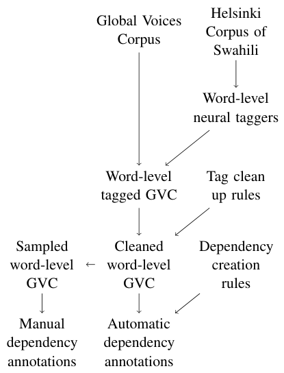
Figure 1: Diagramme des étapes impliquées dans la création de l'Universal Dependency Treebank pour le swahili.
Récemment, des chercheurs ont développé des corpus pour les systèmes de questions-réponses et la classification des émotions en swahili (Martin et al., 2022). De plus, un modèle transformeur pour le swahili a été développé (Martin et al., 2022).
3 Aperçu du système
Étant donné qu'aucune banque d'arbres de dépendance n'est disponible, nous créons automatiquement les arbres de dépendance en utilisant les annotations dans le Corpus d'Helsinki en Swahili. Ce corpus contient des informations syntaxiques sous la forme d'étiquettes de grammaire de contraintes au niveau des mots, qui doivent être converties en annotations de dépendance universelle. Pour cette conversion, nous utilisons un certain nombre de modèles de marquage neuronal, de règles de post-traitement et de règles de création d'arcs de dépendance.
La portion plus petite et de meilleure qualité, annotée manuellement, de la banque d'arbres subit une série d'étapes similaires, mais avant que les règles de création de dépendance ne soient appliquées, une portion de la banque d'arbres est échantillonnée. Cet échantillon est ensuite annoté manuellement. La figure 1 montre les différentes étapes et ressources impliquées dans le processus.
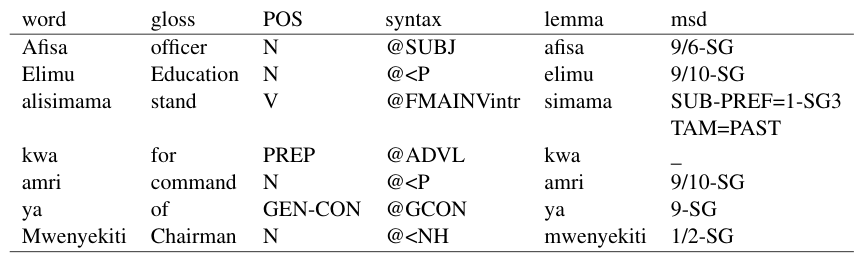
Tableau 1 : Étiquettes pour une seule phrase dans le HCS.
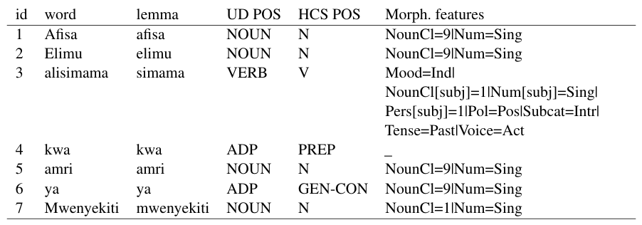
Tableau 2: Représentation CONLL-U de la phrase du tableau 1, en se concentrant uniquement sur les colonnes pertinentes.
4 Corpus
La situation du corpus en swahili est quelque peu difficile. Nous utilisons à la fois le Helsinki Corpus of Swahili (HCS) (Hurskainen, 2004a) et la section swahili du Global Voices corpus (GVC) (Tiedemann, 2012) dans ce travail. En raison des limitations de licence, nous ne sommes pas en mesure d'annoter le Corpus d'Helsinki du Swahili avec les dépendances et de le redistribuer. Pour cette raison, nous exploitons les annotations au niveau du mot de ce corpus pour créer un étiqueteur morphosyntaxique utilisant le jeu d'étiquettes POS du Helsinki Corpus of Swahili, un étiqueteur morphosyntaxique pour les étiquettes UD POS, un analyseur morphologique et un étiqueteur syntaxique de grammaire de contraintes au niveau du mot. Nous utilisons ensuite ces étiqueteurs pour annoter la partie swahili du Global Voices corpus au niveau des mots. Dans une dernière étape, nous créons des annotations de dépendance universelle basées sur toutes ces annotations via une approche basée sur des règles.
Les textes contenus dans le corpus d'Helsinki du swahili proviennent principalement d'assemblées législatives, d'un recueil d'histoires et d'articles de presse. En termes d'annotations, le Helsinki Corpus of Swahili est un corpus « silver standard » (annotation automatique, non corrigée à la main) créé par le transducteur à états finis et désambiguïsateur SALAMA (Hurskainen, 1999). Dans le corpus, chaque mot est annoté avec son lemme, sa balise POS, une série de balises morphologiques et une balise syntaxique fonctionnelle (grammaire des contraintes) décrivant le rôle du mot dans la phrase sont incluses pour chaque mot. Le tableau 1 montre l'annotation au niveau du mot pour la phrase Afisa Elimu alisimama kwa amri ya Mwenyekiti (Eng. : The education officer stood for the Chairman's command) du HCS.
Le tableau 2 montre la conversion de cette phrase au format CONLL-U. Le HCS utilise plusieurs façons d'exprimer la classe nominale ou l'accord de classe nominale d'un mot. Par exemple, les noms (qui possèdent intrinsèquement une classe nominale) indiquent la classe nominale de la forme singulière, la classe nominale de la forme plurielle et si le nom donné est singulier ou pluriel (c.-à-d. 9/10-SG). Les préfixes d'accord de classe nominale sur un verbe suivent une convention différente où la classe nominale, le nombre et la personne sont indiqués (par exemple, 1-SG3). Les adpositions telles que ya, quant à elles, indiquent l'accord de classe de nom comme étant simplement une classe de nom suivie du nombre (i.e., 9-SG). En outre, pour certaines étiquettes POS, certaines caractéristiques morphologiques sont supposées par défaut par le HCS, et seules les caractéristiques qui divergent de cette valeur par défaut sont incluses. Par exemple, la voix active et la polarité positive ne sont souvent pas explicitement annotées dans les annotations HCS, mais la voix passive et la polarité négative le sont.
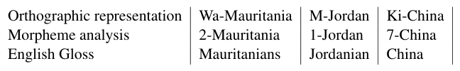
Tableau 3: Exemples de tokenisation de démonymes swahilis.
Le Global Voices Corpus, en revanche, est un grand corpus massivement multilingue avec des textes parallèles dans 46 langues. Le GVC se compose d'articles d'actualité du monde entier. Parce que le corpus contient des articles de journalistes citoyens, le texte des médias sociaux est également inclus. Contrairement au HCS, le GVC se compose de texte brut sans aucune annotation au niveau des mots. Pour notre treebank, nous utilisons la section du GVC avec des textes parallèles en swahili et en anglais. Cette section du corpus se compose de 29 698 phrases en swahili, 546 000 mots.
5 Création d'annotations au niveau des mots
Notre objectif ultime est la création d'un Universal Dependency Treebank pour le swahili. En première étape, nous devons annoter le Global Voices Corpus (GVC) pour les informations au niveau des mots, sur la base desquelles nous pourrons ensuite appliquer les règles qui construiront les annotations de dépendance.
Nous avons entraîné des modèles d’étiquetage neuronal au niveau des mots en utilisant un échantillon de 789 691 mots, correspondant à 35 925 phrases, du Corpus d’Helsinki du swahili (HCS). Une architecture neuronale commune a été utilisée pour les modèles de marquage de mots suivants : étiquettes UD POS, étiquettes POS spécifiques à la langue du HCS, caractéristiques morphologiques et étiquettes syntaxiques fonctionnelles. Cette architecture se compose d'un GRU-LSTM bidirectionnel à deux couches utilisant des embeddings de caractères et de mots appris. En raison du grand nombre de balises morphologiques, nous avons développé une deuxième architecture qui modélise les caractéristiques morphologiques individuelles en tant que balises uniques. Ce modèle est très similaire dans sa conception à l'autre architecture de marquage neuronal. Cependant, au lieu d'utiliser argmax pour prédire une seule étiquette, ce modèle prédit toutes les étiquettes qui dépassent un seuil (0,5) après une activation sigmoïde.
Nous avons ensuite automatiquement tagué le Global Voices Corpus (GVC) avec ces modèles neuronaux. À partir des données GVC automatiquement étiquetées, 150 phrases courtes (longueur 8-30 mots) et 30 phrases plus longues (longueur 20-50 mots) ont été échantillonnées au hasard pour une annotation manuelle. Ensuite, le système de règles a été appliqué au reste de la GVC pour créer les annotations UD.
L'intégration du swahili dans le cadre des dépendances universelles nous a obligés à prendre des décisions d'annotation concernant la tokenisation, la conversion des étiquettes de catégorie grammaticale, le traitement de constructions particulières en swahili. Nous détaillons ces décisions ci-dessous.
Lors de la tokenisation, nous avons accordé une attention particulière pour nous assurer que les démonymes avec des traits d'union n'étaient pas séparés, mais que les composés étaient séparés. Les démonymes tels que ceux présentés dans le tableau 3 sont fréquemment présents dans le corpus de Global Voices. Les expressions régulières utilisées pour la tokenisation assuraient que les traits d'union après les préfixes de classe nominale n'étaient pas séparés du reste du mot.
Conformément aux directives de UD, les composés de conjonctions de coordination et de pronoms sont séparés en leurs tokens constitutifs. Par exemple, naye est séparé en na yeye (Eng.: et il / elle) et nasi est séparé en na sisi (Eng: et vous tous).
Conversion des étiquettes POS en UD Les étiquettes POS du Helsinki Corpus of Swahili sont relativement proches des étiquettes POS de Universal Dependency. En général, la conversion est une correspondance plusieurs-à-un : les étiquettes du corpus d'Helsinki annotent un certain nombre de distinctions qui ne sont pas présentes dans les Dépendances Universelles. De plus, toutes les étiquettes POS réservées à la ponctuation dans le jeu d'étiquettes du Helsinki Corpus of Swahili (c'est-à-dire COLON, HYPHEN, etc.) sont mappées à PUNCT. Le tableau 4 montre la correspondance entre les deux annotations des étiquettes POS.
Dans certains cas, des informations supplémentaires étaient nécessaires pour déterminer la balise de dépendance universelle appropriée. Par exemple, dans HCS, EXCLAM est généralement utilisé pour les interjections telles que jamani (Eng. : hey there). Cependant, il est également utilisé pour les points d'exclamation. Pour ces cas, nous assignons PUNCT.
Les pronoms relatifs et les verbes avec marqueurs relatifs ont tous deux reçu les étiquettes POS Helsinki REL-LI ou REL-LI-VYO. Dans de tels cas, nous utilisons l'étiquette syntaxique fonctionnelle assignée au mot pour la désambiguïsation : si le mot a une étiquette fonctionnelle verbale, alors nous assignons l'étiquette UD V. Dans tous les autres cas, nous assignons PRON.
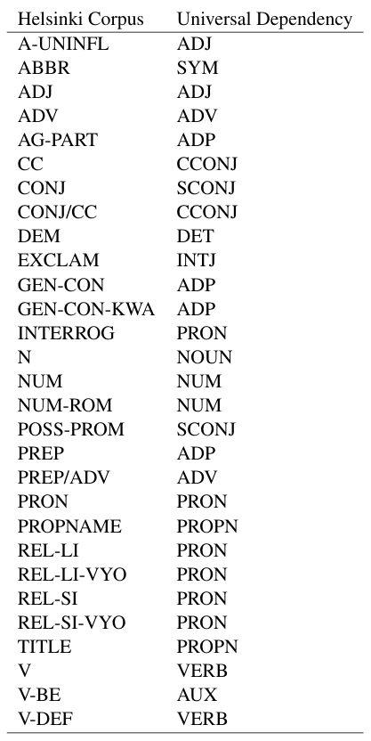
Tableau 4 : Correspondance entre les étiquettes POS du Helsinki Corpus of Swahili et des Universal Dependencies.
Contrairement à la conversion des balises POS, qui est un processus relativement simple, l'extraction morphologique des balises est considérablement plus complexe.
Les caractéristiques morphologiques dans Universal Dependency consistent en des paires attribut-valeur. Ceux-ci sont représentés au format CONLL-U avec les attributs séparés de leurs valeurs associées par '=' et chaque paire est séparée par '|'. Les directives d'annotation Universal Dependency (Nivre et al., 2017) fournissent des caractéristiques morphologiques pour accommoder les classes nominales dans les langues bantoues. Ces caractéristiques sont indiquées en utilisant différentes valeurs pour l'attribut NounClass. Cependant, ces caractéristiques ne sont pas suffisantes puisque les verbes peuvent avoir plusieurs marqueurs de classe nominale indiquant la classe nominale du sujet, de l'objet et de la tête relative.
Par exemple, le mot aliyoitumia possède des marqueurs indiquant la classe nominale, la personne et le nombre pour le sujet, l'objet et la tête relative, voir l'analyse dans l'exemple (1).
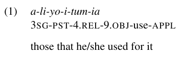
Pour résoudre ce problème, nous utilisons des caractéristiques morphologiques stratifiées. Pour Person, Number, et NounClass, des sous-types supplémentaires tels que rel, subj, et obj sont ajoutés. Jusqu'à récemment, cette possibilité n'était pas documentée dans Universal Dependencies, cependant d'autres treebanks ont établi ces caractéristiques en couches comme un précédent. Un exemple est le treebank Basque Universal Dependency (Aranzabe et al., 2015). Bien que les sous-types ne soient pas décrits dans la documentation du processus de conversion (Aranzabe et al., 2015), ce treebank inclut des verbes avec plusieurs caractéristiques de nombre utilisant des sous-types pour l'indiquer. Contrairement à la banque d'arbres de dépendance universelle basque, nous n'utilisons pas de sous-types avec le cas de l'élément d'accord indiqué pour le swahili. Plutôt, les sous-types spécifient simplement la fonction de l'élément d'accord. Par exemple, là où le corpus basque utilise Number[nom], le corpus swahili utilise Number[subj]. L'option basque n'est pas utilisable pour le swahili car le swahili n'a pas de cas ouvert, et l'adoption d'une analyse de cas caché pour toutes les langues comme le swahili ne suit pas les principes de la dépendance universelle.
6 Création d'annotations de dépendance
6.1 Lignes directrices sur la dépendance
Nous adhérons aux lignes directrices établies par Universal Dependency (Nivre et al., 2017). Cette section présente quelques détails sur la façon dont nous avons appliqué ces lignes directrices au swahili. Les directives de Universal Dependency indiquent que « [l]a copule be n'est pas traitée comme la tête d'une proposition, mais plutôt le prédicat non verbal » (de Marneffe et al., 2020). Les directives conseillent également que "[l]a relation cop doit uniquement être utilisée pour les copules pures qui ajoutent au plus des catégories TAME au sens du prédicat".
Dans la banque d'arbres swahili, nous distinguons la copule « verbale » kuwa et d'autres copules comme ni, la forme négative si, les formes emphatiques comme ndiyo et les copules locatives comme uko. Nous analysons kuwa comme un verbe tandis que les autres copules reçoivent l'étiquette POS COP et ne sont pas considérées comme le noyau de leur clause.
6.2 Application des règles
Pour créer des règles de correction des problèmes courants avec les étiqueteurs neuronaux et générer des arcs de dépendance, CG3 a été utilisé (Bick et Didriksen, 2015). CG3 est une variante étendue de la grammaire de contrainte avec des implémentations pour compiler et appliquer des règles de grammaire de contrainte, nous permettant de développer et d'appliquer des règles complexes.
Corrigeant les erreurs dans les étiquettes au niveau des mots Initialement, des règles ont été écrites pour remédier aux erreurs des étiquettes au niveau des mots produites par les modèles POS neuronaux. Pour corriger les erreurs produites par l'étiqueteur automatique, les commandes SUBSTITUTE et ADD ont été utilisées pour changer une étiquette en une autre, ajouter une étiquette manquante ou supprimer une étiquette erronée. Ces règles de correction des balises au niveau des mots ont été appliquées avant toutes les règles créant des arcs de dépendance.
Dans de nombreux cas, les règles de réécriture des balises étaient utilisées pour réécrire une balise de niveau mot si trois ou plus des autres balises de niveau mot indiquaient qu'une erreur s'était produite. Le premier exemple du tableau 5 montre une règle qui remplace NOUN par VERB dans les cas où d'autres étiqueteurs indiquent que le mot en question est en réalité un verbe. Plus précisément, l'étiqueteur morphosyntaxique spécifique à la langue doit attribuer à ce mot une étiquette V, et il doit avoir la caractéristique morphologique spécifiant la polarité et l'une des nombreuses étiquettes syntaxiques fonctionnelles indiquant que ce mot sert de verbe dans la phrase pour que la règle s'applique.
Création d'arcs de dépendance Pour créer des arcs de dépendance à partir de phrases et des annotations au niveau du mot, nous avons créé des règles d'expressions régulières ordonnées, de sorte que les règles très spécifiques étaient suivies de versions plus génériques utilisant des restrictions plus souples ; et occasionnellement, nous avons utilisé des règles de repli. Certains phénomènes ont été abordés à l'aide d'une seule règle générique sans versions plus spécifiques ou laxistes. Par exemple, la phrase en gras dans la phrase de l'exemple (2) montre un exemple de plusieurs syntagmes nominaux liés ensemble dans une chaîne de syntagmes nominaux associatifs.
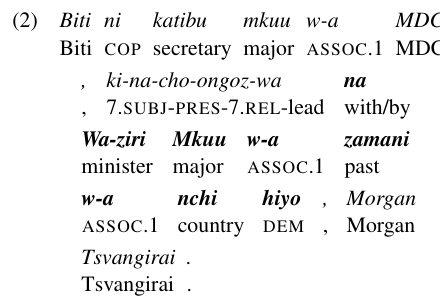
Biti est le secrétaire général du Mouvement pour le changement démocratique, dirigé par l'ancien Premier ministre Morgan Tsvangirai.
Sans prendre en compte l'accord de classe nominale, le syntagme nominal en gras est ambigu, c'est-à-dire que les deux analyses de dépendance de la Figure 2 seraient possibles.
Comme l'analyse interlinéaire dans l'exemple (2) l'indique, zamani est un nom de classe 9, la préposition associative wa est de classe 1, et Waziri est de classe 1. L'associatif s'accorde en classe nominale avec le nom que son nom parent modifie. Ainsi, l'analyse syntaxique dans l'analyse de dépendance à droite de la Figure 2 est la bonne. La version spécifique de la règle, présentée comme la deuxième règle dans le tableau 5, tire parti de cet accord.
Des règles plus génériques sont appliquées si aucune correspondance pour une règle spécifique n'est trouvée. Une règle générique peut s'appliquer en raison d'erreurs dans les étiquettes morphologiques produites par le modèle d'étiquetage ou en raison d'un accord manquant entre les deux tokens. Dans ce cas particulier, les adpositions associatives dans différentes classes de noms sont souvent polysémiques. Par exemple, wa peut indiquer que le nom modifié par son nom parent est de classe 1, comme dans l'exemple ci-dessus, ou de classe 2, 3 ou 11. Les étiqueteurs neuronaux peuvent tirer parti du contexte environnant ; cependant, des erreurs se produisent encore avec une certaine fréquence. Une règle générique est ainsi utilisée pour lutter contre les erreurs dans les annotations morphologiques. Cette règle, présentée comme la troisième règle dans le tableau 5, n'a pas de contraintes d'accord.
Des règles de repli sont appliquées lorsque les critères utilisant à la fois les étiquettes morphologiques et fonctionnelles échouent. Au lieu de cela, de simples schémas d'ordre linéaire conditionnés par les POS sont utilisés dans les règles de repli.
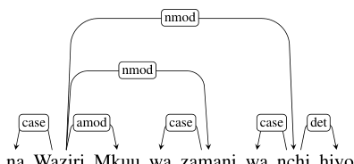
Tableau 5 : Exemple de règle pour la correction des erreurs dans les étiquettes au niveau des mots.
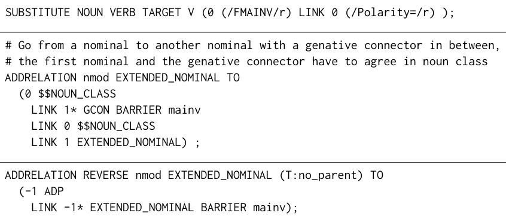
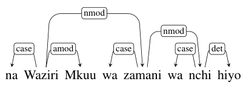
Figure 2 : Deux analyses de dépendance possibles pour la chaîne de syntagmes nominaux de l'exemple (2).
Le tableau 6 montre la fréquence à laquelle des types de règles spécifiques, génériques et de repli sont utilisés pour traiter chaque type de phénomène. Bien que les règles très spécifiques soient capables de désambiguïser plus efficacement entre différents arcs possibles, ces règles spécifiques sont déclenchées moins fréquemment.
7 Qualité des annotations
7.1 Résultats de l'étiquetage au niveau des mots
Avant d'entraîner les modèles de balisage neuronal, nous avons mis de côté 2 000 phrases du Corpus d'Helsinki du swahili, 1 000 phrases pour la validation et 1 000 phrases pour tester les performances du modèle. Le tableau 7 présente les résultats de cette évaluation. Tous les modèles dépassent 94 % d'exactitude, et tous sauf l'étiqueteur morphologique multi-étiquettes atteignent une exactitude de 97 % et plus ; les F-scores correspondants pour l'étiquetage POS et le rôle fonctionnel sont dans la même fourchette. Comme discuté dans la section 5, l'étiqueteur multi-étiquettes produit une étiquette si elle dépasse un seuil de 0,5. Bien que cela permette à l'étiqueteur d'être plus flexible et de considérer des combinaisons de caractéristiques morphologiques qui n'étaient pas présentes dans les données d'entraînement, cela n'impose pas non plus de restrictions de cooccurrence entre les morphèmes. Le modèle multilabel peut prédire à la fois NounClass=9 et NounClass=7 pour le même nom, bien que cela ne devrait pas être permis. Ces restrictions sont automatiquement respectées lors de l'utilisation de l'étiqueteur morphologique monolithique.
Notez que les données de test sont dérivées du corpus source, le Helsinki Corpus of Swahili, et donc la performance exacte des modèles sur le corpus cible (GVC) ne peut être déterminée. Pendant le processus de création manuelle du corpus, nous avons corrigé les étiquettes UD POS et ajouté des arcs de dépendance, mais nous n'avons pas corrigé les autres étiquettes au niveau du mot. À l'avenir, d'autres balises de niveau de mot seront également corrigées.
7.2 Points forts et limites des arbres générés
Sur 29 698 phrases, les règles de création de dépendances génèrent des arbres de dépendance pour 4 994 phrases. 3 499 de ces arbres sont des arbres de dépendance projectifs. Lors de l'examen de phénomènes linguistiques particuliers, les règles fonctionnent bien pour certains et produisent des arbres incorrects ou incomplets lorsqu'elles sont confrontées à d'autres.
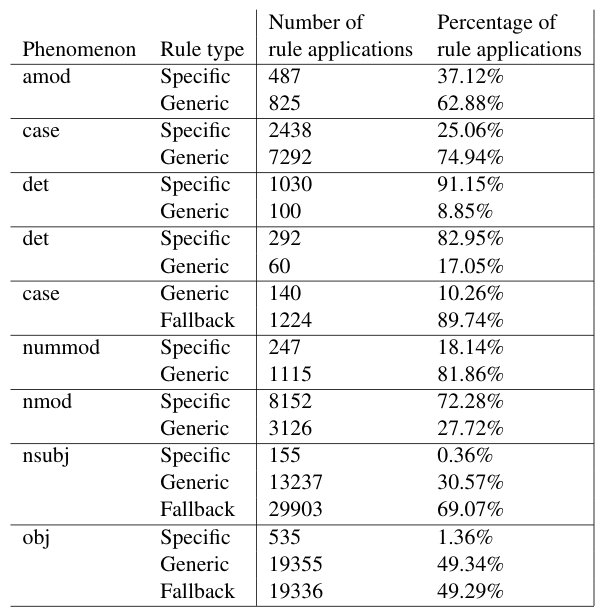
Tableau 6 : Fréquence de type de règle pour les règles de création de dépendance sur Global Voices Corpus.
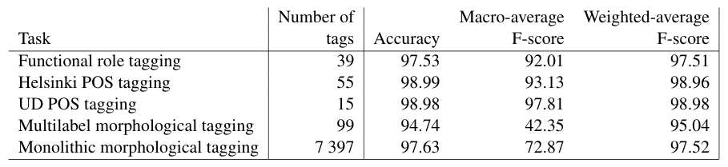
Tableau 7 : Précision du modèle par rapport à la taille des tagsets pour les modèles bidirectionnels basés sur GRU.
Chaînes associatives En swahili, les phrases nominales complexes sont souvent construites en utilisant des chaînes d'adpositions associatives. Notre système de règles se comporte bien avec ces constructions. La figure 3 montre l'arbre généré pour la chaîne associative au début de la phrase dans l'exemple (3). Alors que la chaîne associative est traitée correctement, le syntagme nominal locatif nchini Cambodia devrait modifier Watumiaji (utilisateurs), au début du texte. Cependant, il n'y a pas de caractéristiques morphologiques qui peuvent aider les règles à désambiguïser l'attachement de cette phrase de nom locatif.
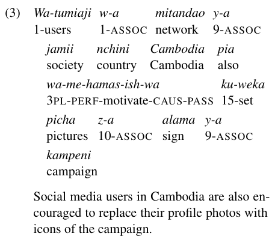
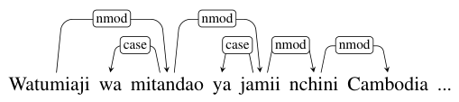
Figure 3 : Chaîne associative initiale dans l'exemple 3
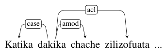
Figure 4 : Un arbre pour une courte clause relative sans tête
Propositions relatives Les propositions relatives, qu'elles soient sans tête ou avec tête, sont souvent traitées correctement par le système de règles. Seules les clauses relatives sans tête sont montrées ici en raison de contraintes d'espace. L'exemple (4) affiche une phrase avec une clause relative sans tête. Le nom dakika (Eng.: minutes) est modifié par la clause relative zilizofuata (Eng.: following). L'adjectif intercalé chache n'interfère pas avec les règles et est également relié à dakika, comme il convient.
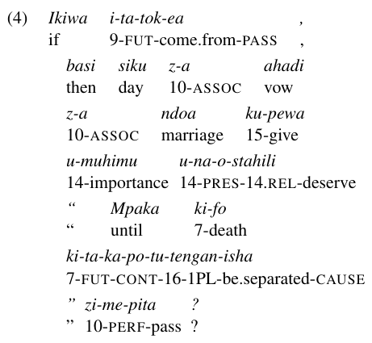
Si cela se produit, sont partis les jours où les vœux de mariage doivent être pris au sérieux "Jusqu'à ce que la mort nous sépare"?
Identification de la racine L'identification de la racine de la proposition à l'aide de règles est difficile. Cela est particulièrement vrai dans les cas où une certaine forme de topicalisation s’est produite.
Dans l'exemple (4), la clause adverbiale frontale Ikiwa itatokea (Eng.: Si cela se produit) interfère avec les règles actuelles d'identification de la racine.
Au lieu d’assigner le statut de racine à kupewa, le verbe dans la proposition adverbiale itatokea est erronément étiqueté comme la racine. Bien que itatokea soit une forme verbale et donc une racine possible, il est le noyau de la proposition subordonnée.
8 Conclusion
Notre travail vise à créer une banque d'arbres Universal Dependencies pour le swahili en tirant parti des annotations du Helsinki Corpus of Swahili. Nous montrons que nous pouvons entraîner des étiqueteurs neuronaux pour annoter les étiquettes UD POS, les étiquettes POS spécifiques à la langue, les étiquettes morphologiques, ainsi que les étiquettes syntaxiques fonctionnelles, et que nous pouvons utiliser ces annotations sur un nouveau corpus pour créer des règles d'expression régulière afin de dériver une annotation de dépendance. Les résultats ne sont pas parfaits : pour environ 30 % des phrases, nos méthodes ne créent pas d'arbres entièrement connectés. Mais nos annotations peuvent être améliorées à l'avenir. Il est, bien sûr, possible d'ajouter plus de règles à notre cadre pour couvrir plus de cas. Cependant, toute nouvelle règle sera très spécifique et n'améliorera donc qu'un très petit nombre de cas. Nous soutenons par conséquent que des améliorations supplémentaires devraient provenir de l'entraînement d'un analyseur syntaxique robuste et de la correction manuelle des arbres syntaxiques. Nous prévoyons d'étudier des méthodes d'analyse syntaxique robustes qui fourniront des analyses fiables lorsqu'elles sont entraînées sur les annotations disponibles.
9 Limites
Il est certain qu'il y a des erreurs dans les annotations automatiques et manuelles. Notre procédure de conversion est limitée par les informations disponibles dans le Corpus de Helsinki du Swahili. Et bien que le premier auteur, qui a annoté manuellement la partie du treebank swahili, ait un entraînement approfondi en syntaxe bantoue, il n'est pas un locuteur natif du swahili. Nous espérons que cette première étape inspire une expansion et/ou une correction future du corpus.
10 Déclaration éthique
Travailler sur une langue sous-dotée s'accompagne toujours du danger de désavantager la communauté linguistique. Cependant, les annotations de dépendance nécessitent un bagage syntaxique, et il n'y a souvent pas assez de locuteurs de la langue avec un tel entraînement. Nous espérons que la communauté swahili adoptera et améliorera notre banque d’arbres. Nous avons choisi consciemment un corpus qui peut être distribué librement, plutôt que de travailler avec le Helsinki Corpus of Swahili, qui est assorti d'exigences de licence restrictives.
Notes
1 Pour plus de détails sur le format CONLL-U, voir https://universaldependencies.org/format.html
2 Les copules locatives comme uko pourraient peut-être être annotées comme un adverbial. Cependant, cela n'affecte que l'étiquette. Le prédicat non verbal suivant uko serait toujours le noyau de la proposition.
3 Par exemple, certaines adpositions comme wa s’accordent avec la classe nominale du nom précédent et correspondraient à une forme de règle spécifique. Cependant, d'autres adpositions comme katika n'indiquent pas la classe nominale du nom précédent de quelque façon que ce soit.
Références
Maria Jesus Aranzabe, Aitziber Atutxa, Kepa Bengoetxea, Arantza Diaz de Ilarraza, Iakes Goenaga, Koldo Gojenola, and Larraitz Uria. 2015. Automatic conversion of the Basque Dependency Treebank to Universal Dependencies. In Proceedings of the Fourteenth International Workshop on Treebanks and Linguistic Theories (TLT14), pages 233-241.
Eckhard Bick and Tino Didriksen. 2015. CG-3 - Beyond classical constraint grammar. In Proceedings of the 20th Nordic Conference of Computational Linguistics (NODALIDA 2015), pages 305-308.
Marie-Catherine de Marneffe, Filip Ginter, Yoav Goldberg, Jan Hajič, Christopher Manning, Ryan McDonald, Joakim Nivre, Slav Petrov, Sampo Pyysalo, Sebastian Schuster, Natalia Silveira, Reut Tsarfaty, Francis Tyers, and Dan Zeman. 2020. Universal Dependencies.
Marie-Catherine de Marneffe, Christopher D. Manning, Joakim Nivre, and Daniel Zeman. 2021. Universal Dependencies. Computational Linguistics, 47(2):255-308.
Guy De Pauw, Gilles-Maurice De Schryver, and Peter W Wagacha. 2006. Data-driven part-of-speech tagging of Kiswahili. In International Conference on Text, Speech and Dialogue, pages 197-204. Springer.
Zellig S. Harris. 1955. From phoneme to morpheme. Language, 31(2):190-222.
Yu Hu, Irina Matveeva, John Goldsmith, and Colin Sprague. 2005. Refining the SED heuristic for morpheme discovery: Another look at Swahili. In Proceedings of the Workshop on Psychocomputational Models of Human Language Acquisition, pages 28-35, Ann Arbor, Michigan. Association for Computational Linguistics.
Arvi Hurskainen. 1992. A two-level computer formalism for the analysis of Bantu morphology. an application to Swahili. Nordic Journal of African Studies, 1(1).
Arvi Hurskainen. 1996. Disambiguation of morphological analysis in Bantu languages. In Proceedings of the 16th Conference on Computational Linguistics, pages 568-573.
Arvi Hurskainen. 1999. Salama: Swahili language manager. Nordic Journal of African Studies, 8:139-157.
Arvi Hurskainen. 2004a. Helsinki corpus of Swahili. Compilers: Institute for Asian and African Studies (University of Helsinki) and CSC.
Arvi Hurskainen. 2004b. Swahili language manager: A storehouse for developing multiple computational applications. Nordic Journal of African Studies, 13(3):363-397.
Kimmo Koskenniemi. 1983. Two-level model for morphological analysis. In IJCAI, volume 83, pages 683-685.
Patrick Littell, Kaitlyn Price, and Lori Levin. 2014. Morphological parsing of Swahili using crowd-sourced lexical resources. In Proceedings of the Ninth International Conference on Language Resources and Evaluation (LREC'14), pages 3333-3339, Reykjavik, Iceland. European Language Resources Association (ELRA).
Gati Martin, Medard Edmund Mswahili, Young-Seob Jeong, and Jiyoung Woo. 2022. SwahBERT: Language model of Swahili. In Proceedings of the 2022 Conference of the North American Chapter of the Association for Computational Linguistics: Human Language Technologies, pages 303-313, Seattle, United States. Association for Computational Linguistics.
Joakim Nivre, Željko Agić, Lars Ahrenberg, Maria Jesus Aranzabe, Masayuki Asahara, Aitziber Atutxa, Miguel Ballesteros, John Bauer, Kepa Bengoetxea, Riyaz Ahmad Bhat, Eckhard Bick, Cristina Bosco, Gosse Bouma, Sam Bowman, Marie Candito, Gülşen Cebiroğlu Eryiğit, Giuseppe G. A. Celano, Fabricio Chalub, Jinho Choi, Çağrı Çöltekin, Miriam Connor, Elizabeth Davidson, Marie-Catherine de Marneffe, Valeria de Paiva, Arantza Diaz de Ilarraza, Kaja Dobrovoljc, Timothy Dozat, Kira Droganova, Puneet Dwivedi, Marhaba Eli, Tomaž Erjavec, Richárd Farkas, Jennifer Foster, Cláudia Freitas, Katarína Gajdošová, Daniel Galbraith, Marcos Garcia, Filip Ginter, Iakes Goenaga, Koldo Gojenola, Memduh Gökırmak, Yoav Goldberg, Xavier Gómez Guinovart, Berta Gonzáles Saavedra, Matias Grioni, Normunds Grūzītis, Bruno Guillaume, Nizar Habash, Jan Hajič, Linh Hà Mỹ, Dag Haug, Barbora Hladká, Petter Hohle, Radu Ion, Elena Irimia, Anders Johannsen, Fredrik Jørgensen, Hüner Kaşıkara, Hiroshi Kanayama, Jenna Kanerva, Natalia Kotsyba, Simon Krek, Veronika Laippala, Phng Lê Hồng, Alessandro Lenci, Nikola Ljubešić, Olga Lyashevskaya, Teresa Lynn, Aibek Makazhanov, Christopher Manning, Cătălina Mărănduc, David Mareček, Héctor Martínez Alonso, André Martins, Jan Mašek, Yuji Matsumoto, Ryan McDonald, Anna Missilä, Verginica Mititelu, Yusuke Miyao, Simonetta Montemagni, Amir More, Shunsuke Mori, Bohdan Moskalevskyi, Kadri Muischnek, Nina Mustafina, Kaili Müürisep, Lng Nguyễn Thị, Huyền Nguyễn Thị Minh, Vitaly Nikolaev, Hanna Nurmi, Stina Ojala, Petya Osenova, Lilja Øvrelid, Elena Pascual, Marco Passarotti, Cenel-Augusto Perez, Guy Perrier, Slav Petrov, Jussi Piitulainen, Barbara Plank, Martin Popel, Lauma Pretkalnin, a, Prokopis Prokopidis, Tiina Puolakainen, Sampo Pyysalo, Alexandre Rademaker, Loganathan Ramasamy, Livy Real, Laura Rituma, Rudolf Rosa, Shadi Saleh, Manuela Sanguinetti, Baiba Saulīte, Sebastian Schuster, Djamé Seddah, Wolfgang Seeker, Mojgan Seraji, Lena Shakurova, Mo Shen, Dmitry Sichinava, Natalia Silveira, Maria Simi, Radu Simionescu, Katalin Simkó, Mária Šimková, Kiril Simov, Aaron Smith, Alane Suhr, Umut Sulubacak, Zsolt Szántó, Dima Taji, Takaaki Tanaka, Reut Tsarfaty, Francis Tyers, Sumire Uematsu, Larraitz Uria, Gertjan van Noord, Viktor Varga, Veronika Vincze, Jonathan North Washington, Zdeněk Žabokrtský, Amir Zeldes, Daniel Zeman, and Hanzhi Zhu. 2017. Universal dependencies 2.0. LINDAT/CLARIAH-CZ digital library at the Institute of Formal and Applied Linguistics (ÚFAL), Faculty of Mathematics and Physics, Charles University.
Gary F Simons and Charles D Fennig. 2018. Ethnologue: Languages of the world, twenty. Dallas: SIL International. Retrieved from www. ethnologue. com. Accessed, page 2018.
Jörg Tiedemann. 2012. Parallel data, tools and interfaces in OPUS. In Proceedings of the Eight International Conference on Language Resources and Evaluation (LREC'12), Istanbul, Turkey. European Language Resources Association (ELRA).
English et Français
Towards a Swahili Universal Dependency Treebank: Leveraging the Annotations of the Helsinki Corpus of Swahili
Vers une banque d’arbres de dépendance universelle pour le swahili : tirer parti des annotations du Corpus d’Helsinki du swahili
Affiliations
Kenneth Steimel
Sandra Kübler
Indiana University
Indiana University
Affiliations
Kenneth Steimel
Sandra Kübler
Indiana University
Indiana University
Abstract
Résumé
Dependency annotation can be a laborious process for under-resourced languages. However, in some cases, other resources are available. We investigate whether we can leverage such resources in the case of Swahili: We use the annotations of the Helsinki Corpus of Swahili for creating a Universal Dependency treebank for Swahili. The Helsinki Corpus of Swahili provides word-level annotations for part of speech tags, morphological features, and functional syntactic tags. We train neural taggers for these types of annotations, then use those models to annotate our target corpus, the Swahili portion of the Global Voices Corpus. Based on the word-level annotations, we then manually create constraint grammar rules to annotate the target corpus for Universal Dependencies. In this paper, we describe the process, discuss the annotation decisions we had to make, and we evaluate the approach.
L'annotation de dépendance peut être un processus laborieux pour les langues sous-dotées en ressources. Cependant, dans certains cas, d'autres ressources sont disponibles. Nous étudions si nous pouvons tirer parti de telles ressources dans le cas du swahili: Nous utilisons les annotations de l'Helsinki Corpus du swahili pour créer une banque d'arbres de dépendance universelle pour le swahili. Le Helsinki Corpus of Swahili fournit des annotations au niveau des mots pour les catégories grammaticales, les traits morphologiques et les étiquettes syntaxiques fonctionnelles. Nous entraînons des étiqueteurs neuronaux pour ces types d'annotations, puis nous utilisons ces modèles pour annoter notre corpus cible, la partie swahili du Global Voices Corpus. Sur la base des annotations au niveau du mot, nous créons ensuite manuellement des règles de grammaire de contrainte pour annoter le corpus cible pour les Dépendances Universelles. Dans cet article, nous décrivons le processus, discutons des décisions d'annotation que nous avons dû prendre, et nous évaluons l'approche.
1 Introduction
1 Introduction
Swahili is the most-widely spoken Bantu language with an estimated 16 million native speakers (Simons and Fennig, 2018) and 50-100 million L2 speakers. Swahili serves as a national language of Tanzania, Kenya, Uganda, and the DRC, is a working language of the African Union, and serves as lingua franca for the East African Community.
Le swahili est la langue bantoue la plus parlée avec environ 16 millions de locuteurs natifs (Simons et Fennig, 2018) et 50 à 100 millions de locuteurs L2. Le swahili sert de langue nationale de la Tanzanie, du Kenya, de l'Ouganda et de la RDC, est une langue de travail de l'Union africaine et sert de lingua franca pour la Communauté d'Afrique de l'Est.
While not a typical under-resourced language in general, there are no syntactic treebanks available for Swahili. Since dependency annotation is a costly endeavor and requires experts in the syntactic framework as well as in the language, we investigate whether we can leverage existing resources to automate the creation of a treebank as much as possible. We investigate an approach where we use the Helsinki Corpus of Swahili (Hurskainen, 2004a) and its annotations as a starting point. We then create automatic taggers for the word-level annotation based on this corpus. After applying these taggers to our target corpus, the Swahili section of the Global Voices Corpus (Tiedemann, 2012), we use a rule-based approach to convert the word-level annotation to Universal Dependency (UD) annotations (de Marneffe et al., 2021). The word-level annotations available in the Helsinki Corpus of Swahili consist of part of speech (POS) tags, based on a POS tagset that has more fine grained information than the Universal Dependency part of speech tagset. Additionally, the corpus contains morphological features and functional syntactic tags, which are based on a constraint grammar framework.
Bien qu'il ne s'agisse pas d'une langue sous-dotée typique en général, il n'existe aucun treebank syntaxique disponible pour le swahili. Puisque l'annotation des dépendances est une entreprise coûteuse et nécessite des experts dans le cadre syntaxique ainsi que dans la langue, nous étudions si nous pouvons tirer parti des ressources existantes pour automatiser la création d'une banque d'arbres autant que possible. Nous étudions une approche où nous utilisons le Corpus Helsinki de Swahili (Hurskainen, 2004a) et ses annotations comme point de départ. Nous créons ensuite des étiqueteurs automatiques pour l'annotation au niveau des mots basés sur ce corpus. Après avoir appliqué ces étiqueteurs à notre corpus cible, la section swahili du Global Voices Corpus (Tiedemann, 2012), nous utilisons une approche à base de règles pour convertir l'annotation au niveau des mots en annotations Universal Dependency (UD) (de Marneffe et al., 2021). Les annotations au niveau des mots disponibles dans le Helsinki Corpus of Swahili se composent d'étiquettes de catégorie grammaticale (POS), fondées sur un jeu d'étiquettes POS qui contient des informations plus fines que le jeu d'étiquettes de catégorie grammaticale d'Universal Dependency. De plus, le corpus contient des caractéristiques morphologiques et des étiquettes syntaxiques fonctionnelles, qui sont basées sur un cadre de grammaire contrainte.
In the process of converting the morphological and syntactic information into the Universal Dependency framework, we encountered challenges based on the fact that little work has been done on UD annotations for Bantu languages. We will discuss some of these cases along with the annotation decisions we have made. The treebank, all rules and code are available at https://git.steimel.info/ksteimel/SWH_UDT. The treebank will be included in the next release of UD.
Lors de la conversion des informations morphologiques et syntaxiques dans le cadre des dépendances universelles, nous avons rencontré des défis basés sur le fait que peu de travaux ont été réalisés sur les annotations UD pour les langues bantoues. Nous discuterons de certains de ces cas ainsi que des décisions d'annotation que nous avons prises. Le treebank, toutes les règles et le code sont disponibles à https://git.steimel.info/ksteimel/SWH_UDT. La banque d'arbres sera incluse dans la prochaine version d'UD.
The remainder of this paper is structured as follows: section 2 reports on related work, section 3 gives an overview of the system used for converting the annotations, and section 4 describes the corpora we use. In section 5, we describe the word-level annotations, and in section 6, we describe the rules for the dependency annotation. Section 7 looks into the quality of our annotations, and section 8 concludes.
Le reste de cet article est structuré comme suit : la section 2 rend compte des travaux connexes, la section 3 donne un aperçu du système utilisé pour convertir les annotations et la section 4 décrit les corpus que nous utilisons. Dans la section 5, nous décrivons les annotations au niveau des mots, et dans la section 6, nous décrivons les règles pour l'annotation de dépendance. La section 7 examine la qualité de nos annotations, et la section 8 conclut.
2 Related Work: NLP Approaches for Swahili
2 Travaux connexes : Approches de TAL pour le swahili
Political and economic significance promote research on Swahili making it one of the more well-studied Bantu languages in natural language processing. Rule-based systems, data driven approaches, and unsupervised methods have been adopted for Swahili. Hurskainen (1992) presents the first research into morphological analysis of Swahili. The SWATWOL morphological analyzer uses a finite-state two level morphology (Koskenniemi, 1983) to tag words. A constraint grammar system is used to disambiguate when multiple analyses are provided by the finite state-system (Hurskainen, 1996). These components are combined together into the Swahili language manager (SALAMA) (Hurskainen, 2004b). The SALAMA system is extended to include a shallow constraint grammar parser and a deeper grammar-based dependency parser. Though the dependency parser in SALAMA would appear invaluable to the present work, the parser is not freely available and the dependency structure is not provided as part of the Helsinki Corpus of Swahili (Hurskainen, 2004a). Littell et al. (2014) develop a similar finite state morphological analyzer for Swahili. However, their approach involves using an online crowd-sourced dictionary (kamusi.org) to ensure wide lexical coverage.
L'importance politique et économique encourage la recherche sur le swahili, ce qui en fait l'une des langues bantoues les plus étudiées dans le traitement du langage naturel. Des systèmes basés sur des règles, des approches axées sur les données et des méthodes non supervisées ont été adoptés pour le swahili. Hurskainen (1992) présente la première recherche sur l'analyse morphologique du swahili. L'analyseur morphologique SWATWOL utilise une morphologie à deux niveaux à états finis (Koskenniemi, 1983) pour marquer les mots. Un système de grammaire à contraintes est utilisé pour désambiguïser lorsque plusieurs analyses sont fournies par le système à états finis (Hurskainen, 1996). Ces composants sont combinés ensemble dans le gestionnaire de langue swahilie (SALAMA) (Hurskainen, 2004b). Le système SALAMA est étendu pour inclure un analyseur syntaxique superficiel à grammaire de contraintes et un analyseur syntaxique en dépendance plus profond basé sur la grammaire. Bien que l'analyseur syntaxique à dépendances dans SALAMA semblerait inestimable pour le présent travail, l'analyseur n'est pas librement disponible et la structure de dépendance n'est pas fournie comme partie du Helsinki Corpus of Swahili (Hurskainen, 2004a). Littell et al. (2014) développent un analyseur morphologique à états finis similaire pour le swahili. Cependant, leur approche implique l'utilisation d'un dictionnaire en ligne participatif (kamusi.org) pour assurer une large couverture lexicale.
Using corpora developed by rule-based methods, De Pauw et al. (2006) adopt a data driven approach instead. They train part of speech taggers on the Helsinki Corpus of Swahili (Hurskainen, 2004a), which was built using the SALAMA language manager system described above. They use a variety of different off the shelf taggers including a Hidden Markov Model (TnT), SVMs (SVMtool), memory-based taggers (MBT) and a maximum entropy model tagger (MXPOST). The best performance is achieved with the maximum entropy model, though all models reach an accuracy of more than 90%. The maximum entropy model does particularly well with out-of-vocabulary words.
En utilisant des corpus développés par des méthodes fondées sur des règles, De Pauw et coll. (2006) adoptent plutôt une approche axée sur les données. Ils entraînent des étiqueteurs de catégories grammaticales sur le Helsinki Corpus of Swahili (Hurskainen, 2004a), qui a été construit en utilisant le système de gestionnaire de langue SALAMA décrit ci-dessus. Ils utilisent une variété d'étiqueteurs prêts à l'emploi, y compris un modèle de Markov caché (TnT), des SVM (SVMtool), des étiqueteurs basés sur la mémoire (MBT) et un étiqueteur à modèle d'entropie maximale (MXPOST). La meilleure performance est atteinte avec le modèle d'entropie maximale, bien que tous les modèles atteignent une précision de plus de 90 %. Le modèle d'entropie maximale se comporte particulièrement bien avec les mots hors vocabulaire.
Swahili has also been the focus of research on unsupervised morpheme discovery. Hu et al. (2005) use a string-edit-distance (SED) heuristic to learn the morphology of Swahili. This heuristic goes through all pairs of words in a corpus and creates an alignment between the pairs using edit distance with specific penalties for substitution, addition and deletion. Then, finite-state automata describing pairs of related strings are collapsed together with aligned sequences of characters mapping onto the same state. This process iterates; the finite state automata produced combine with other automata. In the end, the places where the FSA diverges are morpheme boundaries. The authors report high performance when compared to other unsupervised morpheme discovery heuristics such as successor frequency (Harris, 1955).
Le swahili a également été au centre de recherches sur la découverte non supervisée de morphèmes. Hu et al. (2005) utilisent une heuristique string-edit-distance (SED) pour apprendre la morphologie du swahili. Cette heuristique passe en revue toutes les paires de mots d'un corpus et crée un alignement entre les paires en utilisant la distance d'édition avec des pénalités spécifiques pour la substitution, l'addition et la suppression. Ensuite, les automates à états finis décrivant des paires de chaînes liées sont réduits ensemble avec des séquences alignées de caractères mappant sur le même état. Ce processus itère ; les automates à états finis produits se combinent avec d'autres automates. À la fin, les endroits où l'AEF diverge sont les limites des morphèmes. Les auteurs font état de performances élevées par rapport à d'autres heuristiques de découverte de morphèmes non supervisées telles que la fréquence des successeurs (Harris, 1955).
Figure 1: Diagram of the steps involved in creating the Universal Dependency Treebank for Swahili.
Figure 1: Diagramme des étapes impliquées dans la création de l'Universal Dependency Treebank pour le swahili.
Recently, researchers have developed corpora for question answering and emotion classification in Swahili (Martin et al., 2022). In addition, a transformer model for Swahili has been developed (Martin et al., 2022).
Récemment, des chercheurs ont développé des corpus pour les systèmes de questions-réponses et la classification des émotions en swahili (Martin et al., 2022). De plus, un modèle transformeur pour le swahili a été développé (Martin et al., 2022).
3 System Overview
3 Aperçu du système
Since no dependency treebank is available, we create the dependency trees automatically, using the annotations in the Helsinki Corpus of Swahili. This corpus contains syntactic information in the form of word-level constraint grammar labels, which need to be converted into Universal Dependency annotations. For this conversion, we use a number of neural tagging models, post-processing rules, and dependency arc creation rules.
Étant donné qu'aucune banque d'arbres de dépendance n'est disponible, nous créons automatiquement les arbres de dépendance en utilisant les annotations dans le Corpus d'Helsinki en Swahili. Ce corpus contient des informations syntaxiques sous la forme d'étiquettes de grammaire de contraintes au niveau des mots, qui doivent être converties en annotations de dépendance universelle. Pour cette conversion, nous utilisons un certain nombre de modèles de marquage neuronal, de règles de post-traitement et de règles de création d'arcs de dépendance.
The smaller higher-quality, manually annotated, portion of the treebank undergoes a similar series of steps but before dependency creation rules are applied, a portion of the treebank is sampled. This sample is then manually annotated. Figure 1 displays the different steps and resources involved in the process.
La portion plus petite et de meilleure qualité, annotée manuellement, de la banque d'arbres subit une série d'étapes similaires, mais avant que les règles de création de dépendance ne soient appliquées, une portion de la banque d'arbres est échantillonnée. Cet échantillon est ensuite annoté manuellement. La figure 1 montre les différentes étapes et ressources impliquées dans le processus.
Table 1: Tags for a single sentence in the HCS.
Tableau 1 : Étiquettes pour une seule phrase dans le HCS.
Table 2: CONLL-U representation of the sentence in Table 1, focusing on the relevant columns only.
Tableau 2: Représentation CONLL-U de la phrase du tableau 1, en se concentrant uniquement sur les colonnes pertinentes.
4 Corpora
4 Corpus
The corpus situation for Swahili is somewhat difficult. We use both the Helsinki Corpus of Swahili (HCS) (Hurskainen, 2004a) and the Swahili section of the Global Voices corpus (GVC) (Tiedemann, 2012) in this work. Because of licensing limitations, we are unable to annotate the Helsinki Corpus of Swahili with dependencies and redistribute it. For this reason, we leverage the word-level annotations of this corpus to create a POS tagger using the Helsinki Corpus of Swahili POS tagset, a POS tagger for UD POS tags, a morphological analyzer, and a word-level constraint-grammar syntactic tagger. We then use these taggers to annotate the Swahili portion of the Global Voices corpus on the word level. In a final step, we create Universal Dependency annotations based on all of these annotations via a rule-based approach.
La situation du corpus en swahili est quelque peu difficile. Nous utilisons à la fois le Helsinki Corpus of Swahili (HCS) (Hurskainen, 2004a) et la section swahili du Global Voices corpus (GVC) (Tiedemann, 2012) dans ce travail. En raison des limitations de licence, nous ne sommes pas en mesure d'annoter le Corpus d'Helsinki du Swahili avec les dépendances et de le redistribuer. Pour cette raison, nous exploitons les annotations au niveau du mot de ce corpus pour créer un étiqueteur morphosyntaxique utilisant le jeu d'étiquettes POS du Helsinki Corpus of Swahili, un étiqueteur morphosyntaxique pour les étiquettes UD POS, un analyseur morphologique et un étiqueteur syntaxique de grammaire de contraintes au niveau du mot. Nous utilisons ensuite ces étiqueteurs pour annoter la partie swahili du Global Voices corpus au niveau des mots. Dans une dernière étape, nous créons des annotations de dépendance universelle basées sur toutes ces annotations via une approche basée sur des règles.
The texts contained in the Helsinki Corpus of Swahili are primarily from legislative assemblies, a collection of stories, and news articles. In terms of annotations, the Helsinki Corpus of Swahili is a silver standard corpus created by the SALAMA finite state transducer and disambiguator (Hurskainen, 1999). In the corpus, each word is annotated with its lemma, POS tag, a series of morphological tags, and a functional syntactic tag (constraint grammar) describing the word's role in the sentence are included for each word. Table 1 shows the word-level annotation for the sentence Afisa Elimu alisimama kwa amri ya Mwenyekiti (Eng.: The education officer stood for the Chairman's command) from the HCS.
Les textes contenus dans le corpus d'Helsinki du swahili proviennent principalement d'assemblées législatives, d'un recueil d'histoires et d'articles de presse. En termes d'annotations, le Helsinki Corpus of Swahili est un corpus « silver standard » (annotation automatique, non corrigée à la main) créé par le transducteur à états finis et désambiguïsateur SALAMA (Hurskainen, 1999). Dans le corpus, chaque mot est annoté avec son lemme, sa balise POS, une série de balises morphologiques et une balise syntaxique fonctionnelle (grammaire des contraintes) décrivant le rôle du mot dans la phrase sont incluses pour chaque mot. Le tableau 1 montre l'annotation au niveau du mot pour la phrase Afisa Elimu alisimama kwa amri ya Mwenyekiti (Eng. : The education officer stood for the Chairman's command) du HCS.
Table 2 shows the conversion of this sentence to CONLL-U format. The HCS uses multiple ways to express the noun class or noun class agreement of a word. For example, nouns (which inherently have a noun class) indicate the noun class of the singular form, the noun class of the plural form and whether the given noun is singular or plural (i.e. 9/10-SG). Noun class agreement prefixes on a verb follow a different convention where noun class, number, and person are indicated (e.g., 1-SG3). Adpositions such as ya, meanwhile, indicate noun class agreement as simply a noun class followed by the number (i.e., 9-SG). Additionally, for some POS tags, certain morphological features are assumed as the default by the HCS, and only features which diverge from this default are included. For example, active voice and positive polarity are frequently not explicitly annotated in the HCS annotations, but passive voice and negative polarity are.
Le tableau 2 montre la conversion de cette phrase au format CONLL-U. Le HCS utilise plusieurs façons d'exprimer la classe nominale ou l'accord de classe nominale d'un mot. Par exemple, les noms (qui possèdent intrinsèquement une classe nominale) indiquent la classe nominale de la forme singulière, la classe nominale de la forme plurielle et si le nom donné est singulier ou pluriel (c.-à-d. 9/10-SG). Les préfixes d'accord de classe nominale sur un verbe suivent une convention différente où la classe nominale, le nombre et la personne sont indiqués (par exemple, 1-SG3). Les adpositions telles que ya, quant à elles, indiquent l'accord de classe de nom comme étant simplement une classe de nom suivie du nombre (i.e., 9-SG). En outre, pour certaines étiquettes POS, certaines caractéristiques morphologiques sont supposées par défaut par le HCS, et seules les caractéristiques qui divergent de cette valeur par défaut sont incluses. Par exemple, la voix active et la polarité positive ne sont souvent pas explicitement annotées dans les annotations HCS, mais la voix passive et la polarité négative le sont.
Table 3: Tokenization examples of Swahili demonyms.
Tableau 3: Exemples de tokenisation de démonymes swahilis.
The Global Voices Corpus, in contrast, is a large massively multilingual corpus with parallel texts in 46 languages. The GVC consists of news articles from around the world. Because the corpus features articles by citizen journalists, social media text is included as well. Unlike the HCS, the GVC consists of plain text without any word-level annotations. For our treebank, we use the section of the GVC with parallel texts in Swahili and English. This section of the corpus consists of 29 698 Swahili sentences, 546 000 words.
Le Global Voices Corpus, en revanche, est un grand corpus massivement multilingue avec des textes parallèles dans 46 langues. Le GVC se compose d'articles d'actualité du monde entier. Parce que le corpus contient des articles de journalistes citoyens, le texte des médias sociaux est également inclus. Contrairement au HCS, le GVC se compose de texte brut sans aucune annotation au niveau des mots. Pour notre treebank, nous utilisons la section du GVC avec des textes parallèles en swahili et en anglais. Cette section du corpus se compose de 29 698 phrases en swahili, 546 000 mots.
5 Creating Word-Level Annotations
5 Création d'annotations au niveau des mots
Our ultimate goal is the creation of a Universal Dependency Treebank for Swahili. As a first step, we need to annotate the Global Voices Corpus (GVC) for word-level information, based on which we can then apply the rules that will construct the dependency annotations.
Notre objectif ultime est la création d'un Universal Dependency Treebank pour le swahili. En première étape, nous devons annoter le Global Voices Corpus (GVC) pour les informations au niveau des mots, sur la base desquelles nous pourrons ensuite appliquer les règles qui construiront les annotations de dépendance.
We trained word-level neural tagging models using a sample of 789 691 words, corresponding to 35 925 sentences, from the Helsinki Corpus of Swahili (HCS). A common neural architecture was used for the following word-level tagging models: UD POS tags, language specific POS tags from the HCS, morphological features, and functional syntactic tags. This architecture consists of a two layer bidirectional GRU-LSTM using learned character and word embeddings. Because of the large number of morphological tags, we developed a second architecture that models individual morphological features as single tags. This model is very similar in design to the other neural tagging architecture. However, instead of using argmax to predict a single tag, this model predicts all tags that exceed a threshold (0.5) after a sigmoid activation.
Nous avons entraîné des modèles d’étiquetage neuronal au niveau des mots en utilisant un échantillon de 789 691 mots, correspondant à 35 925 phrases, du Corpus d’Helsinki du swahili (HCS). Une architecture neuronale commune a été utilisée pour les modèles de marquage de mots suivants : étiquettes UD POS, étiquettes POS spécifiques à la langue du HCS, caractéristiques morphologiques et étiquettes syntaxiques fonctionnelles. Cette architecture se compose d'un GRU-LSTM bidirectionnel à deux couches utilisant des embeddings de caractères et de mots appris. En raison du grand nombre de balises morphologiques, nous avons développé une deuxième architecture qui modélise les caractéristiques morphologiques individuelles en tant que balises uniques. Ce modèle est très similaire dans sa conception à l'autre architecture de marquage neuronal. Cependant, au lieu d'utiliser argmax pour prédire une seule étiquette, ce modèle prédit toutes les étiquettes qui dépassent un seuil (0,5) après une activation sigmoïde.
We then automatically tagged the Global Voices Corpus (GVC) with these neural models. From the automatically tagged GVC data, 150 short sentences (length 8-30 words) and 30 longer sentences (length 20-50 words) were randomly sampled for manual annotation. Then, the rule system was applied to the remainder of the GVC to create the UD annotations.
Nous avons ensuite automatiquement tagué le Global Voices Corpus (GVC) avec ces modèles neuronaux. À partir des données GVC automatiquement étiquetées, 150 phrases courtes (longueur 8-30 mots) et 30 phrases plus longues (longueur 20-50 mots) ont été échantillonnées au hasard pour une annotation manuelle. Ensuite, le système de règles a été appliqué au reste de la GVC pour créer les annotations UD.
Integrating Swahili into the Universal Dependency framework required us to make annotation decisions regarding tokenization, conversion of part of speech tags, handling of particular constructions in Swahili. We detail these decisions below.
L'intégration du swahili dans le cadre des dépendances universelles nous a obligés à prendre des décisions d'annotation concernant la tokenisation, la conversion des étiquettes de catégorie grammaticale, le traitement de constructions particulières en swahili. Nous détaillons ces décisions ci-dessous.
Tokenization When tokenizing, we took special consideration to ensure that demonyms with hyphens were not separated, but compounds were split apart. Demonyms such as those shown in Table 3 are frequently present in the Global Voices corpus. The regular expressions used for tokenization ensured that hyphens after noun class prefixes were not separated from the rest of the word.
Lors de la tokenisation, nous avons accordé une attention particulière pour nous assurer que les démonymes avec des traits d'union n'étaient pas séparés, mais que les composés étaient séparés. Les démonymes tels que ceux présentés dans le tableau 3 sont fréquemment présents dans le corpus de Global Voices. Les expressions régulières utilisées pour la tokenisation assuraient que les traits d'union après les préfixes de classe nominale n'étaient pas séparés du reste du mot.
Following UD guidelines, compounds of coordinating conjunctions and pronouns are separated into their component tokens. For example, naye is separated into na yeye (Eng.: and he/she) and nasi is separate into na sisi (Eng: and you all).
Conformément aux directives de UD, les composés de conjonctions de coordination et de pronoms sont séparés en leurs tokens constitutifs. Par exemple, naye est séparé en na yeye (Eng.: et il / elle) et nasi est séparé en na sisi (Eng: et vous tous).
Converting POS Tags to UD The POS tags for the Helsinki Corpus of Swahili are relatively close to Universal Dependency POS tags. In general, the conversion is a many-to-one mapping: the Helsinki corpus tags annotate a number of distinctions that are not featured in Universal Dependencies. Additionally, all POS tags reserved for punctuation in the Helsinki Corpus of Swahili tagset (i.e., COLON, HYPHEN, etc.) are mapped to PUNCT. Table 4 shows the correspondence between the two POS tags annotations.
Conversion des étiquettes POS en UD Les étiquettes POS du Helsinki Corpus of Swahili sont relativement proches des étiquettes POS de Universal Dependency. En général, la conversion est une correspondance plusieurs-à-un : les étiquettes du corpus d'Helsinki annotent un certain nombre de distinctions qui ne sont pas présentes dans les Dépendances Universelles. De plus, toutes les étiquettes POS réservées à la ponctuation dans le jeu d'étiquettes du Helsinki Corpus of Swahili (c'est-à-dire COLON, HYPHEN, etc.) sont mappées à PUNCT. Le tableau 4 montre la correspondance entre les deux annotations des étiquettes POS.
In some cases, additional information was required to determine the appropriate Universal Dependency tag. For example, in HCS, EXCLAM is typically used for interjections such as jamani (Eng.: hey there). However, it is also used for exclamation marks. For those cases, we assign PUNCT.
Dans certains cas, des informations supplémentaires étaient nécessaires pour déterminer la balise de dépendance universelle appropriée. Par exemple, dans HCS, EXCLAM est généralement utilisé pour les interjections telles que jamani (Eng. : hey there). Cependant, il est également utilisé pour les points d'exclamation. Pour ces cas, nous assignons PUNCT.
Both relative pronouns and verbs with relative markers received the Helsinki POS tags REL-LI or REL-LI-VYO. In such cases, we use the functional syntactic tag assigned to the word for disambiguation: if the word has a verbal functional tag, then we assign the UD tag V. In all other cases, we assign PRON.
Les pronoms relatifs et les verbes avec marqueurs relatifs ont tous deux reçu les étiquettes POS Helsinki REL-LI ou REL-LI-VYO. Dans de tels cas, nous utilisons l'étiquette syntaxique fonctionnelle assignée au mot pour la désambiguïsation : si le mot a une étiquette fonctionnelle verbale, alors nous assignons l'étiquette UD V. Dans tous les autres cas, nous assignons PRON.
Table 4: Correspondence between Helsinki Corpus of Swahili and Universal Dependencies POS tags.
Tableau 4 : Correspondance entre les étiquettes POS du Helsinki Corpus of Swahili et des Universal Dependencies.
Morphological Features Unlike the conversion of POS tags, which is a relatively straightforward process, morphological tag extraction is considerably more complex.
Contrairement à la conversion des balises POS, qui est un processus relativement simple, l'extraction morphologique des balises est considérablement plus complexe.
Morphological features in Universal Dependency consist of attribute-value pairs. These are represented in the CONLL-U format with attributes separated from their associated values by '=' and each pair is separated by '|'. The Universal Dependency annotation guidelines (Nivre et al., 2017) provide morphological features to accommodate noun classes in Bantu languages. These features are indicated using different values for the NounClass attribute. However, these features are not sufficient since verbs can have multiple noun class markers indicating the noun class of the subject, object, and relative head.
Les caractéristiques morphologiques dans Universal Dependency consistent en des paires attribut-valeur. Ceux-ci sont représentés au format CONLL-U avec les attributs séparés de leurs valeurs associées par '=' et chaque paire est séparée par '|'. Les directives d'annotation Universal Dependency (Nivre et al., 2017) fournissent des caractéristiques morphologiques pour accommoder les classes nominales dans les langues bantoues. Ces caractéristiques sont indiquées en utilisant différentes valeurs pour l'attribut NounClass. Cependant, ces caractéristiques ne sont pas suffisantes puisque les verbes peuvent avoir plusieurs marqueurs de classe nominale indiquant la classe nominale du sujet, de l'objet et de la tête relative.
For example, the word aliyoitumia has markers indicating noun class, person, and number for the subject, object, and relative head, see the analysis in example (1).
Par exemple, le mot aliyoitumia possède des marqueurs indiquant la classe nominale, la personne et le nombre pour le sujet, l'objet et la tête relative, voir l'analyse dans l'exemple (1).
To address this issue, we use layered morphological features. For Person, Number, and NounClass, additional subtypes such as rel, subj, and obj are added. Until recently, this was not a documented possibility in Universal Dependencies, however other treebanks have established these layered features as a precedent. One example is the Basque Universal Dependency treebank (Aranzabe et al., 2015). Though subtypes are not described in the documentation of the conversion process (Aranzabe et al., 2015), this treebank includes verbs with multiple number features using subtypes to indicate the type. Unlike the Basque Universal Dependency treebank, we do not use subtypes with the case of the agreeing element indicated for Swahili. Rather, the subtypes simply specify the function of the agreeing element. For example, where the Basque corpus uses Number[nom], the Swahili corpus uses Number[subj]. The Basque option is not usable for Swahili as Swahili does not have overt case, and adopting a covert case analysis for all languages like Swahili does not follow the principles of Universal Dependency.
Pour résoudre ce problème, nous utilisons des caractéristiques morphologiques stratifiées. Pour Person, Number, et NounClass, des sous-types supplémentaires tels que rel, subj, et obj sont ajoutés. Jusqu'à récemment, cette possibilité n'était pas documentée dans Universal Dependencies, cependant d'autres treebanks ont établi ces caractéristiques en couches comme un précédent. Un exemple est le treebank Basque Universal Dependency (Aranzabe et al., 2015). Bien que les sous-types ne soient pas décrits dans la documentation du processus de conversion (Aranzabe et al., 2015), ce treebank inclut des verbes avec plusieurs caractéristiques de nombre utilisant des sous-types pour l'indiquer. Contrairement à la banque d'arbres de dépendance universelle basque, nous n'utilisons pas de sous-types avec le cas de l'élément d'accord indiqué pour le swahili. Plutôt, les sous-types spécifient simplement la fonction de l'élément d'accord. Par exemple, là où le corpus basque utilise Number[nom], le corpus swahili utilise Number[subj]. L'option basque n'est pas utilisable pour le swahili car le swahili n'a pas de cas ouvert, et l'adoption d'une analyse de cas caché pour toutes les langues comme le swahili ne suit pas les principes de la dépendance universelle.
6 Creating Dependency Annotations
6 Création d'annotations de dépendance
6.1 Dependency Guidelines
6.1 Lignes directrices sur la dépendance
We adhere to the guidelines laid out by Universal Dependency (Nivre et al., 2017). This section outlines some specifics for how we applied these guidelines to Swahili. The Universal Dependency guidelines state that "[t]he copula be is not treated as the head of a clause, but rather the nonverbal predicate" (de Marneffe et al., 2020). The guidelines also advise that "[t]he cop relation should only be used for pure copulas that add at most TAME categories to the meaning of the predicate".
Nous adhérons aux lignes directrices établies par Universal Dependency (Nivre et al., 2017). Cette section présente quelques détails sur la façon dont nous avons appliqué ces lignes directrices au swahili. Les directives de Universal Dependency indiquent que « [l]a copule be n'est pas traitée comme la tête d'une proposition, mais plutôt le prédicat non verbal » (de Marneffe et al., 2020). Les directives conseillent également que "[l]a relation cop doit uniquement être utilisée pour les copules pures qui ajoutent au plus des catégories TAME au sens du prédicat".
In the Swahili treebank, we make a distinction between the "verbal" copula kuwa and other copulas like ni, the negated form si, emphatic forms like ndiyo and locative copulas like uko. We analyze kuwa as a verb while the other copulas are given the POS tag COP and are not considered the head of their clause.
Dans la banque d'arbres swahili, nous distinguons la copule « verbale » kuwa et d'autres copules comme ni, la forme négative si, les formes emphatiques comme ndiyo et les copules locatives comme uko. Nous analysons kuwa comme un verbe tandis que les autres copules reçoivent l'étiquette POS COP et ne sont pas considérées comme le noyau de leur clause.
6.2 Rule application
6.2 Application des règles
To create rules for correcting common issues with the neural taggers and generate dependency arcs, CG3 was used (Bick and Didriksen, 2015). CG3 is an extended variant of constraint grammar with implementations for compiling and applying constraint grammar rules, allowing us to develop and apply complex rules.
Pour créer des règles de correction des problèmes courants avec les étiqueteurs neuronaux et générer des arcs de dépendance, CG3 a été utilisé (Bick et Didriksen, 2015). CG3 est une variante étendue de la grammaire de contrainte avec des implémentations pour compiler et appliquer des règles de grammaire de contrainte, nous permettant de développer et d'appliquer des règles complexes.
Addressing errors in word-level tags Initially, rules were written to remedy errors with the word-level tags produced by the neural POS models. To correct errors produced by the automatic tagger, SUBSTITUTE and ADD commands were used to change one tag to another, add a missing tag, or remove an errant tag. These word-level tag correction rules were applied before all rules creating dependency arcs.
Corrigeant les erreurs dans les étiquettes au niveau des mots Initialement, des règles ont été écrites pour remédier aux erreurs des étiquettes au niveau des mots produites par les modèles POS neuronaux. Pour corriger les erreurs produites par l'étiqueteur automatique, les commandes SUBSTITUTE et ADD ont été utilisées pour changer une étiquette en une autre, ajouter une étiquette manquante ou supprimer une étiquette erronée. Ces règles de correction des balises au niveau des mots ont été appliquées avant toutes les règles créant des arcs de dépendance.
In many cases, tag rewrite rules were leveraged to rewrite a word-level tag if three or more of the other word-level tags indicated that an error had occurred. The first example in Table 5 displays a rule that replaces NOUN with VERB in cases where other taggers indicate that the word in question is actually a verb. More specifically, the language specific POS tagger must assign this word a V tag, and it must have the morphological feature specifying polarity and one of a number of functional syntactic tags indicating that this word is serving as a verb in the sentence for the rule to apply.
Dans de nombreux cas, les règles de réécriture des balises étaient utilisées pour réécrire une balise de niveau mot si trois ou plus des autres balises de niveau mot indiquaient qu'une erreur s'était produite. Le premier exemple du tableau 5 montre une règle qui remplace NOUN par VERB dans les cas où d'autres étiqueteurs indiquent que le mot en question est en réalité un verbe. Plus précisément, l'étiqueteur morphosyntaxique spécifique à la langue doit attribuer à ce mot une étiquette V, et il doit avoir la caractéristique morphologique spécifiant la polarité et l'une des nombreuses étiquettes syntaxiques fonctionnelles indiquant que ce mot sert de verbe dans la phrase pour que la règle s'applique.
Dependency arc creation To create dependency arcs from sentences plus the word-level annotations, we created ordered regular expression rules, such that highly specific rules were followed by more generic versions using more lax restrictions; and occasionally we used fallback rules. Some phenomena were addressed using a single generic rule without more specific or lax versions. For example, the bold phrase in the sentence in example (2) shows an example of multiple noun phrases linked together in an associative noun phrase chain.
Création d'arcs de dépendance Pour créer des arcs de dépendance à partir de phrases et des annotations au niveau du mot, nous avons créé des règles d'expressions régulières ordonnées, de sorte que les règles très spécifiques étaient suivies de versions plus génériques utilisant des restrictions plus souples ; et occasionnellement, nous avons utilisé des règles de repli. Certains phénomènes ont été abordés à l'aide d'une seule règle générique sans versions plus spécifiques ou laxistes. Par exemple, la phrase en gras dans la phrase de l'exemple (2) montre un exemple de plusieurs syntagmes nominaux liés ensemble dans une chaîne de syntagmes nominaux associatifs.
Biti is the secretary general for Movement for Democratic Change, led by former Prime Minister Morgan Tsvangirai.
Biti est le secrétaire général du Mouvement pour le changement démocratique, dirigé par l'ancien Premier ministre Morgan Tsvangirai.
Without taking noun class agreement into consideration, the noun phrase in bold is ambiguous, i.e., both dependency analyses in Figure 2 would be possible.
Sans prendre en compte l'accord de classe nominale, le syntagme nominal en gras est ambigu, c'est-à-dire que les deux analyses de dépendance de la Figure 2 seraient possibles.
As the interlinear analysis in example (2) indicates, zamani is a class 9 noun, the associative adposition wa is class 1, and Waziri is class 1. The associative agrees in noun class with the noun that its parent noun modifies. Thus the syntactic analysis in the dependency analysis on the right of Figure 2 is the correct one. The specific version of the rule, shown as the second rule in Table 5, leverages this agreement.
Comme l'analyse interlinéaire dans l'exemple (2) l'indique, zamani est un nom de classe 9, la préposition associative wa est de classe 1, et Waziri est de classe 1. L'associatif s'accorde en classe nominale avec le nom que son nom parent modifie. Ainsi, l'analyse syntaxique dans l'analyse de dépendance à droite de la Figure 2 est la bonne. La version spécifique de la règle, présentée comme la deuxième règle dans le tableau 5, tire parti de cet accord.
More generic rules are applied if no match for a specific rule is found. A generic rule may apply because of errors in the morphological tags produced by the tagging model or because of missing agreement between the two tokens. In this particular case, associative adpositions in different noun classes are often polysemous. For example, wa can indicate that the noun modified by its parent noun is class 1, as in the example above, or classes 2, 3, or 11. The neural taggers can leverage the surrounding context; however errors still occur with some frequency. A generic rule is thus used to combat errors in the morphological annotations. This rule, shown as the third rule in Table 5, has no agreement constraints.
Des règles plus génériques sont appliquées si aucune correspondance pour une règle spécifique n'est trouvée. Une règle générique peut s'appliquer en raison d'erreurs dans les étiquettes morphologiques produites par le modèle d'étiquetage ou en raison d'un accord manquant entre les deux tokens. Dans ce cas particulier, les adpositions associatives dans différentes classes de noms sont souvent polysémiques. Par exemple, wa peut indiquer que le nom modifié par son nom parent est de classe 1, comme dans l'exemple ci-dessus, ou de classe 2, 3 ou 11. Les étiqueteurs neuronaux peuvent tirer parti du contexte environnant ; cependant, des erreurs se produisent encore avec une certaine fréquence. Une règle générique est ainsi utilisée pour lutter contre les erreurs dans les annotations morphologiques. Cette règle, présentée comme la troisième règle dans le tableau 5, n'a pas de contraintes d'accord.
Fallback rules are applied in cases where criteria using morphological and functional tags both fail. Instead, simple linear ordering patterns conditioned on POS are used in fallback rules.
Des règles de repli sont appliquées lorsque les critères utilisant à la fois les étiquettes morphologiques et fonctionnelles échouent. Au lieu de cela, de simples schémas d'ordre linéaire conditionnés par les POS sont utilisés dans les règles de repli.
Table 5: Example rule for error correction in word-level tags.
Tableau 5 : Exemple de règle pour la correction des erreurs dans les étiquettes au niveau des mots.
Figure 2: Two possible dependency analyses for the noun phrase chain from example (2).
Figure 2 : Deux analyses de dépendance possibles pour la chaîne de syntagmes nominaux de l'exemple (2).
Table 6 shows how often specific, generic, and fallback rule types are used to address each type of phenomenon. While the highly specific rules are able to disambiguate between different possible arcs more effectively, these specific rules are triggered less frequently.
Le tableau 6 montre la fréquence à laquelle des types de règles spécifiques, génériques et de repli sont utilisés pour traiter chaque type de phénomène. Bien que les règles très spécifiques soient capables de désambiguïser plus efficacement entre différents arcs possibles, ces règles spécifiques sont déclenchées moins fréquemment.
7 Quality of Annotations
7 Qualité des annotations
7.1 Word-Level Tagging Results
7.1 Résultats de l'étiquetage au niveau des mots
Before we trained the neural tagging models, we set aside 2 000 sentences from the Helsinki Corpus of Swahili, 1 000 sentences for validation and 1 000 sentences for testing the model's performance. Table 7 shows the results of this evaluation. All models exceed 94% accuracy, and all but the multilabel morphological tagger reach an accuracy of 97% and higher; corresponding F-scores for POS tagging, and functional role are in the same range. As discussed in section 5, the multilabel tagger outputs a tag if it exceeds a threshold of 0.5. While this allows the tagger to be more flexible and consider combinations of morphological features that were not present in the training data, it also does not enforce co-occurrence restrictions between morphemes. The multilabel model can predict both NounClass=9 and NounClass=7 for the same noun, though this should not be permitted. These restrictions are automatically followed when using the monolithic morphological tagger.
Avant d'entraîner les modèles de balisage neuronal, nous avons mis de côté 2 000 phrases du Corpus d'Helsinki du swahili, 1 000 phrases pour la validation et 1 000 phrases pour tester les performances du modèle. Le tableau 7 présente les résultats de cette évaluation. Tous les modèles dépassent 94 % d'exactitude, et tous sauf l'étiqueteur morphologique multi-étiquettes atteignent une exactitude de 97 % et plus ; les F-scores correspondants pour l'étiquetage POS et le rôle fonctionnel sont dans la même fourchette. Comme discuté dans la section 5, l'étiqueteur multi-étiquettes produit une étiquette si elle dépasse un seuil de 0,5. Bien que cela permette à l'étiqueteur d'être plus flexible et de considérer des combinaisons de caractéristiques morphologiques qui n'étaient pas présentes dans les données d'entraînement, cela n'impose pas non plus de restrictions de cooccurrence entre les morphèmes. Le modèle multilabel peut prédire à la fois NounClass=9 et NounClass=7 pour le même nom, bien que cela ne devrait pas être permis. Ces restrictions sont automatiquement respectées lors de l'utilisation de l'étiqueteur morphologique monolithique.
Note that the test data are derived from the source corpus, the Helsinki Corpus of Swahili, and therefore the exact performance of the models on the target corpus (GVC) cannot be determined. During the manual corpus creation process, we corrected UD POS tags and added depedency arcs but did not correct other word level tags. In the future, other word level tags will also be corrected.
Notez que les données de test sont dérivées du corpus source, le Helsinki Corpus of Swahili, et donc la performance exacte des modèles sur le corpus cible (GVC) ne peut être déterminée. Pendant le processus de création manuelle du corpus, nous avons corrigé les étiquettes UD POS et ajouté des arcs de dépendance, mais nous n'avons pas corrigé les autres étiquettes au niveau du mot. À l'avenir, d'autres balises de niveau de mot seront également corrigées.
7.2 Strengths and Limitations in Generated Trees
7.2 Points forts et limites des arbres générés
Out of 29 698 sentences, the dependency creation rules rules generate spanning trees for 4 994 sentences. 3 499 of these trees are projective dependency trees. When examining particular linguistic phenomena, the rules do well at some and produce incorrect or incomplete trees when confronted with others.
Sur 29 698 phrases, les règles de création de dépendances génèrent des arbres de dépendance pour 4 994 phrases. 3 499 de ces arbres sont des arbres de dépendance projectifs. Lors de l'examen de phénomènes linguistiques particuliers, les règles fonctionnent bien pour certains et produisent des arbres incorrects ou incomplets lorsqu'elles sont confrontées à d'autres.
Table 6: Rule type frequency for dependency creation rules on Global Voices Corpus.
Tableau 6 : Fréquence de type de règle pour les règles de création de dépendance sur Global Voices Corpus.
Table 7: Model accuracy in relation to tagset size for bidirectional GRU-based models.
Tableau 7 : Précision du modèle par rapport à la taille des tagsets pour les modèles bidirectionnels basés sur GRU.
Associative chains In Swahili, complex noun phrases are often constructed using chains of associative adpositions. Our system of rules does well with these constructions. Figure 3 shows the tree generated for the associative chain at the beginning of the sentence in example (3). While the associative chain is handled correctly, the locative noun phrase nchini Cambodia should be modifying Watumiaji (users), at the beginning of the text. However, there are no morphological features that can help the rules disambiguate the attachment of this locative noun phrase.
Chaînes associatives En swahili, les phrases nominales complexes sont souvent construites en utilisant des chaînes d'adpositions associatives. Notre système de règles se comporte bien avec ces constructions. La figure 3 montre l'arbre généré pour la chaîne associative au début de la phrase dans l'exemple (3). Alors que la chaîne associative est traitée correctement, le syntagme nominal locatif nchini Cambodia devrait modifier Watumiaji (utilisateurs), au début du texte. Cependant, il n'y a pas de caractéristiques morphologiques qui peuvent aider les règles à désambiguïser l'attachement de cette phrase de nom locatif.
Figure 3: Initial associate chain in example 3
Figure 3 : Chaîne associative initiale dans l'exemple 3
Figure 4: A tree for a short headless relative clause
Figure 4 : Un arbre pour une courte clause relative sans tête
Relative clauses Both headless and headed relative clauses are often handled correctly by the system of rules. Only headless relative clauses are shown here due to space constraints. Example (4) displays a phrase with a headless relative clause. The noun dakika (Eng.: minutes) is modified by the relative clause zilizofuata (Eng.: following). The intervening adjective chache does not interfere with the rules and is also connected to dakika, as appropriate.
Propositions relatives Les propositions relatives, qu'elles soient sans tête ou avec tête, sont souvent traitées correctement par le système de règles. Seules les clauses relatives sans tête sont montrées ici en raison de contraintes d'espace. L'exemple (4) affiche une phrase avec une clause relative sans tête. Le nom dakika (Eng.: minutes) est modifié par la clause relative zilizofuata (Eng.: following). L'adjectif intercalé chache n'interfère pas avec les règles et est également relié à dakika, comme il convient.
If this will happen, gone are the days when the marriage vows are to be taken seriously "Til death do us part"?
Si cela se produit, sont partis les jours où les vœux de mariage doivent être pris au sérieux "Jusqu'à ce que la mort nous sépare"?
Root identification Identifying the root of the clause using rules is difficult. This is particularly true in cases where topicalization of some kind has occurred.
Identification de la racine L'identification de la racine de la proposition à l'aide de règles est difficile. Cela est particulièrement vrai dans les cas où une certaine forme de topicalisation s’est produite.
In example (4), the fronted adverbial clause Ikiwa itatokea (Eng.: If this will happen) interferes with the current rules for root identification.
Dans l'exemple (4), la clause adverbiale frontale Ikiwa itatokea (Eng.: Si cela se produit) interfère avec les règles actuelles d'identification de la racine.
Instead of assigning kupewa root status, the verb in the adverbial clause itatokea is erroneously labeled as the root. While itatokea is a verbal form and thus a possible root, it is the head of the subordinate clause.
Au lieu d’assigner le statut de racine à kupewa, le verbe dans la proposition adverbiale itatokea est erronément étiqueté comme la racine. Bien que itatokea soit une forme verbale et donc une racine possible, il est le noyau de la proposition subordonnée.
8 Conclusion
8 Conclusion
Our work is concerned with creating a Universal Dependency treebank for Swahili leveraging the annotations in the Helsinki Corpus of Swahili. We show that we can train neural taggers to annotate UD POS tags, language specific POS tags, morphological tags, as well as functional syntactic tags, and that we can use those annotations on a new corpus to create regular expression rules to derive a dependency annotation. The results are not perfect: for about 30% of the sentences, our methods do not create fully connected trees. But our annotations can be improved in the future. It is, of course, possible to add more rules to our framework to cover more cases. However, any new rule will be very specific and will thus only improve a very small number of cases. We consequently argue that additional improvement should come from training a robust parser and manually correcting the parse trees. We are planning to investigate robust parsing methods that will provide reliable parses when trained on the available annotations.
Notre travail vise à créer une banque d'arbres Universal Dependencies pour le swahili en tirant parti des annotations du Helsinki Corpus of Swahili. Nous montrons que nous pouvons entraîner des étiqueteurs neuronaux pour annoter les étiquettes UD POS, les étiquettes POS spécifiques à la langue, les étiquettes morphologiques, ainsi que les étiquettes syntaxiques fonctionnelles, et que nous pouvons utiliser ces annotations sur un nouveau corpus pour créer des règles d'expression régulière afin de dériver une annotation de dépendance. Les résultats ne sont pas parfaits : pour environ 30 % des phrases, nos méthodes ne créent pas d'arbres entièrement connectés. Mais nos annotations peuvent être améliorées à l'avenir. Il est, bien sûr, possible d'ajouter plus de règles à notre cadre pour couvrir plus de cas. Cependant, toute nouvelle règle sera très spécifique et n'améliorera donc qu'un très petit nombre de cas. Nous soutenons par conséquent que des améliorations supplémentaires devraient provenir de l'entraînement d'un analyseur syntaxique robuste et de la correction manuelle des arbres syntaxiques. Nous prévoyons d'étudier des méthodes d'analyse syntaxique robustes qui fourniront des analyses fiables lorsqu'elles sont entraînées sur les annotations disponibles.
9 Limitations
9 Limites
It is certain that there are errors in the automatic and manual annotations. Our conversion procedure is limited by the information available in the Helsinki Corpus of Swahili. And while the first author, who manually annotated the portion of the Swahili treebank, has extensive training in Bantu syntax, he is not a native speaker of Swahili. We hope that this initial step inspires future expansion and/or correction of the corpus.
Il est certain qu'il y a des erreurs dans les annotations automatiques et manuelles. Notre procédure de conversion est limitée par les informations disponibles dans le Corpus de Helsinki du Swahili. Et bien que le premier auteur, qui a annoté manuellement la partie du treebank swahili, ait un entraînement approfondi en syntaxe bantoue, il n'est pas un locuteur natif du swahili. Nous espérons que cette première étape inspire une expansion et/ou une correction future du corpus.
10 Ethics Statement
10 Déclaration éthique
Working on an under-resourced language is always accompanied by the danger of disenfranchising the language community. However, dependency annotations require a syntactic background, and there are often not enough speakers of the language with such a training. We hope that the Swahili community will adopt and improve our treebank. We have consciously chosen a corpus the can be freely distributed, rather than working with the Helsinki Corpus of Swahili, which comes with restrictive licensing requirements.
Travailler sur une langue sous-dotée s'accompagne toujours du danger de désavantager la communauté linguistique. Cependant, les annotations de dépendance nécessitent un bagage syntaxique, et il n'y a souvent pas assez de locuteurs de la langue avec un tel entraînement. Nous espérons que la communauté swahili adoptera et améliorera notre banque d’arbres. Nous avons choisi consciemment un corpus qui peut être distribué librement, plutôt que de travailler avec le Helsinki Corpus of Swahili, qui est assorti d'exigences de licence restrictives.
Notes
Notes
1 For more details on CONLL-U format, see https://universaldependencies.org/format.html
1 Pour plus de détails sur le format CONLL-U, voir https://universaldependencies.org/format.html
2 Locative copulas like uko could perhaps be annotated as an adverbial. However, this only affects the label. The nonverbal predicate following uko would still be the head of the clause.
2 Les copules locatives comme uko pourraient peut-être être annotées comme un adverbial. Cependant, cela n'affecte que l'étiquette. Le prédicat non verbal suivant uko serait toujours le noyau de la proposition.
3 For example, some adpositions like wa agree with the noun class of the preceding noun and would match a specific rule form. However, other adpositions like katika do not indicate the noun class of the preceding noun in any way.
3 Par exemple, certaines adpositions comme wa s’accordent avec la classe nominale du nom précédent et correspondraient à une forme de règle spécifique. Cependant, d'autres adpositions comme katika n'indiquent pas la classe nominale du nom précédent de quelque façon que ce soit.
References
Références
Maria Jesus Aranzabe, Aitziber Atutxa, Kepa Bengoetxea, Arantza Diaz de Ilarraza, Iakes Goenaga, Koldo Gojenola, and Larraitz Uria. 2015. Automatic conversion of the Basque Dependency Treebank to Universal Dependencies. In Proceedings of the Fourteenth International Workshop on Treebanks and Linguistic Theories (TLT14), pages 233-241.
Eckhard Bick and Tino Didriksen. 2015. CG-3 - Beyond classical constraint grammar. In Proceedings of the 20th Nordic Conference of Computational Linguistics (NODALIDA 2015), pages 305-308.
Marie-Catherine de Marneffe, Filip Ginter, Yoav Goldberg, Jan Hajič, Christopher Manning, Ryan McDonald, Joakim Nivre, Slav Petrov, Sampo Pyysalo, Sebastian Schuster, Natalia Silveira, Reut Tsarfaty, Francis Tyers, and Dan Zeman. 2020. Universal Dependencies.
Marie-Catherine de Marneffe, Christopher D. Manning, Joakim Nivre, and Daniel Zeman. 2021. Universal Dependencies. Computational Linguistics, 47(2):255-308.
Guy De Pauw, Gilles-Maurice De Schryver, and Peter W Wagacha. 2006. Data-driven part-of-speech tagging of Kiswahili. In International Conference on Text, Speech and Dialogue, pages 197-204. Springer.
Zellig S. Harris. 1955. From phoneme to morpheme. Language, 31(2):190-222.
Yu Hu, Irina Matveeva, John Goldsmith, and Colin Sprague. 2005. Refining the SED heuristic for morpheme discovery: Another look at Swahili. In Proceedings of the Workshop on Psychocomputational Models of Human Language Acquisition, pages 28-35, Ann Arbor, Michigan. Association for Computational Linguistics.
Arvi Hurskainen. 1992. A two-level computer formalism for the analysis of Bantu morphology. an application to Swahili. Nordic Journal of African Studies, 1(1).
Arvi Hurskainen. 1996. Disambiguation of morphological analysis in Bantu languages. In Proceedings of the 16th Conference on Computational Linguistics, pages 568-573.
Arvi Hurskainen. 1999. Salama: Swahili language manager. Nordic Journal of African Studies, 8:139-157.
Arvi Hurskainen. 2004a. Helsinki corpus of Swahili. Compilers: Institute for Asian and African Studies (University of Helsinki) and CSC.
Arvi Hurskainen. 2004b. Swahili language manager: A storehouse for developing multiple computational applications. Nordic Journal of African Studies, 13(3):363-397.
Kimmo Koskenniemi. 1983. Two-level model for morphological analysis. In IJCAI, volume 83, pages 683-685.
Patrick Littell, Kaitlyn Price, and Lori Levin. 2014. Morphological parsing of Swahili using crowd-sourced lexical resources. In Proceedings of the Ninth International Conference on Language Resources and Evaluation (LREC'14), pages 3333-3339, Reykjavik, Iceland. European Language Resources Association (ELRA).
Gati Martin, Medard Edmund Mswahili, Young-Seob Jeong, and Jiyoung Woo. 2022. SwahBERT: Language model of Swahili. In Proceedings of the 2022 Conference of the North American Chapter of the Association for Computational Linguistics: Human Language Technologies, pages 303-313, Seattle, United States. Association for Computational Linguistics.
Joakim Nivre, Željko Agić, Lars Ahrenberg, Maria Jesus Aranzabe, Masayuki Asahara, Aitziber Atutxa, Miguel Ballesteros, John Bauer, Kepa Bengoetxea, Riyaz Ahmad Bhat, Eckhard Bick, Cristina Bosco, Gosse Bouma, Sam Bowman, Marie Candito, Gülşen Cebiroğlu Eryiğit, Giuseppe G. A. Celano, Fabricio Chalub, Jinho Choi, Çağrı Çöltekin, Miriam Connor, Elizabeth Davidson, Marie-Catherine de Marneffe, Valeria de Paiva, Arantza Diaz de Ilarraza, Kaja Dobrovoljc, Timothy Dozat, Kira Droganova, Puneet Dwivedi, Marhaba Eli, Tomaž Erjavec, Richárd Farkas, Jennifer Foster, Cláudia Freitas, Katarína Gajdošová, Daniel Galbraith, Marcos Garcia, Filip Ginter, Iakes Goenaga, Koldo Gojenola, Memduh Gökırmak, Yoav Goldberg, Xavier Gómez Guinovart, Berta Gonzáles Saavedra, Matias Grioni, Normunds Grūzītis, Bruno Guillaume, Nizar Habash, Jan Hajič, Linh Hà Mỹ, Dag Haug, Barbora Hladká, Petter Hohle, Radu Ion, Elena Irimia, Anders Johannsen, Fredrik Jørgensen, Hüner Kaşıkara, Hiroshi Kanayama, Jenna Kanerva, Natalia Kotsyba, Simon Krek, Veronika Laippala, Phng Lê Hồng, Alessandro Lenci, Nikola Ljubešić, Olga Lyashevskaya, Teresa Lynn, Aibek Makazhanov, Christopher Manning, Cătălina Mărănduc, David Mareček, Héctor Martínez Alonso, André Martins, Jan Mašek, Yuji Matsumoto, Ryan McDonald, Anna Missilä, Verginica Mititelu, Yusuke Miyao, Simonetta Montemagni, Amir More, Shunsuke Mori, Bohdan Moskalevskyi, Kadri Muischnek, Nina Mustafina, Kaili Müürisep, Lng Nguyễn Thị, Huyền Nguyễn Thị Minh, Vitaly Nikolaev, Hanna Nurmi, Stina Ojala, Petya Osenova, Lilja Øvrelid, Elena Pascual, Marco Passarotti, Cenel-Augusto Perez, Guy Perrier, Slav Petrov, Jussi Piitulainen, Barbara Plank, Martin Popel, Lauma Pretkalnin, a, Prokopis Prokopidis, Tiina Puolakainen, Sampo Pyysalo, Alexandre Rademaker, Loganathan Ramasamy, Livy Real, Laura Rituma, Rudolf Rosa, Shadi Saleh, Manuela Sanguinetti, Baiba Saulīte, Sebastian Schuster, Djamé Seddah, Wolfgang Seeker, Mojgan Seraji, Lena Shakurova, Mo Shen, Dmitry Sichinava, Natalia Silveira, Maria Simi, Radu Simionescu, Katalin Simkó, Mária Šimková, Kiril Simov, Aaron Smith, Alane Suhr, Umut Sulubacak, Zsolt Szántó, Dima Taji, Takaaki Tanaka, Reut Tsarfaty, Francis Tyers, Sumire Uematsu, Larraitz Uria, Gertjan van Noord, Viktor Varga, Veronika Vincze, Jonathan North Washington, Zdeněk Žabokrtský, Amir Zeldes, Daniel Zeman, and Hanzhi Zhu. 2017. Universal dependencies 2.0. LINDAT/CLARIAH-CZ digital library at the Institute of Formal and Applied Linguistics (ÚFAL), Faculty of Mathematics and Physics, Charles University.
Gary F Simons and Charles D Fennig. 2018. Ethnologue: Languages of the world, twenty. Dallas: SIL International. Retrieved from www. ethnologue. com. Accessed, page 2018.
Jörg Tiedemann. 2012. Parallel data, tools and interfaces in OPUS. In Proceedings of the Eight International Conference on Language Resources and Evaluation (LREC'12), Istanbul, Turkey. European Language Resources Association (ELRA).
Comment citer
Citez l'article original pour son contenu et ses résultats. Citez la traduction lorsque vous reprenez la formulation traduite.
Citer l'article original
Steimel, K. et Kübler, S. (2023). Towards a Swahili Universal Dependency Treebank: Leveraging the Annotations of the Helsinki Corpus of Swahili. Dans Proceedings of the Fourth workshop on Resources for African Indigenous Languages (RAIL 2023) (p. 86-96). https://doi.org/10.18653/v1/2023.rail-1.10
@inproceedings{steimel-etal-2023-towards,
title = "Towards a {S}wahili {U}niversal {D}ependency Treebank: Leveraging the Annotations of the {H}elsinki Corpus of {S}wahili",
author = {Steimel, Kenneth and
K{\"u}bler, Sandra},
editor = "Mabuya, Rooweither and
Mthobela, Don and
Setaka, Mmasibidi and
Van Zaanen, Menno",
booktitle = "Proceedings of the Fourth workshop on Resources for {A}frican Indigenous Languages ({RAIL} 2023)",
month = may,
year = "2023",
address = "Dubrovnik, Croatia",
publisher = "Association for Computational Linguistics",
url = "https://aclanthology.org/2023.rail-1.10/",
doi = "10.18653/v1/2023.rail-1.10",
pages = "86--96"
}TY - CONF AU - Steimel, Kenneth AU - Kübler, Sandra TI - Towards a Swahili Universal Dependency Treebank: Leveraging the Annotations of the Helsinki Corpus of Swahili T2 - Proceedings of the Fourth workshop on Resources for African Indigenous Languages (RAIL 2023) PY - 2023 SP - 86 EP - 96 DO - 10.18653/v1/2023.rail-1.10 UR - https://aclanthology.org/2023.rail-1.10/ LA - en ER -
Citer cette traduction
Steimel, K. et Kübler, S. (2026). Vers une banque d’arbres de dépendance universelle pour le swahili : tirer parti des annotations du Corpus d’Helsinki du swahili (E. van Gassen, trad.). Traduction de "Towards a Swahili Universal Dependency Treebank: Leveraging the Annotations of the Helsinki Corpus of Swahili" (Proceedings of the Fourth workshop on Resources for African Indigenous Languages (RAIL 2023), 2023). Talitha, Arktos AI Lab. https://talithapapers.com/fr/papers/2023.rail-1.10/
@misc{steimel-etal-2023-towards-fr,
author = {Kenneth Steimel and Sandra Kübler},
translator = {van Gassen, Ernst},
title = {{Vers une banque d’arbres de dépendance universelle pour le swahili : tirer parti des annotations du Corpus d’Helsinki du swahili}},
year = {2026},
publisher = {Arktos AI Lab},
language = {french},
url = {https://talithapapers.com/fr/papers/2023.rail-1.10/},
note = {Traduction de Towards a Swahili Universal Dependency Treebank: Leveraging the Annotations of the Helsinki Corpus of Swahili (Proceedings of the Fourth workshop on Resources for African Indigenous Languages (RAIL 2023), 2023). Traduction automatique, non relue par un humain.}
}TY - GEN AU - Steimel, Kenneth AU - Kübler, Sandra TA - van Gassen, Ernst TI - Vers une banque d’arbres de dépendance universelle pour le swahili : tirer parti des annotations du Corpus d’Helsinki du swahili PY - 2026 PB - Arktos AI Lab UR - https://talithapapers.com/fr/papers/2023.rail-1.10/ LA - fr N1 - Traduction de Towards a Swahili Universal Dependency Treebank: Leveraging the Annotations of the Helsinki Corpus of Swahili (Proceedings of the Fourth workshop on Resources for African Indigenous Languages (RAIL 2023), 2023). Traduction automatique, non relue par un humain. ER -